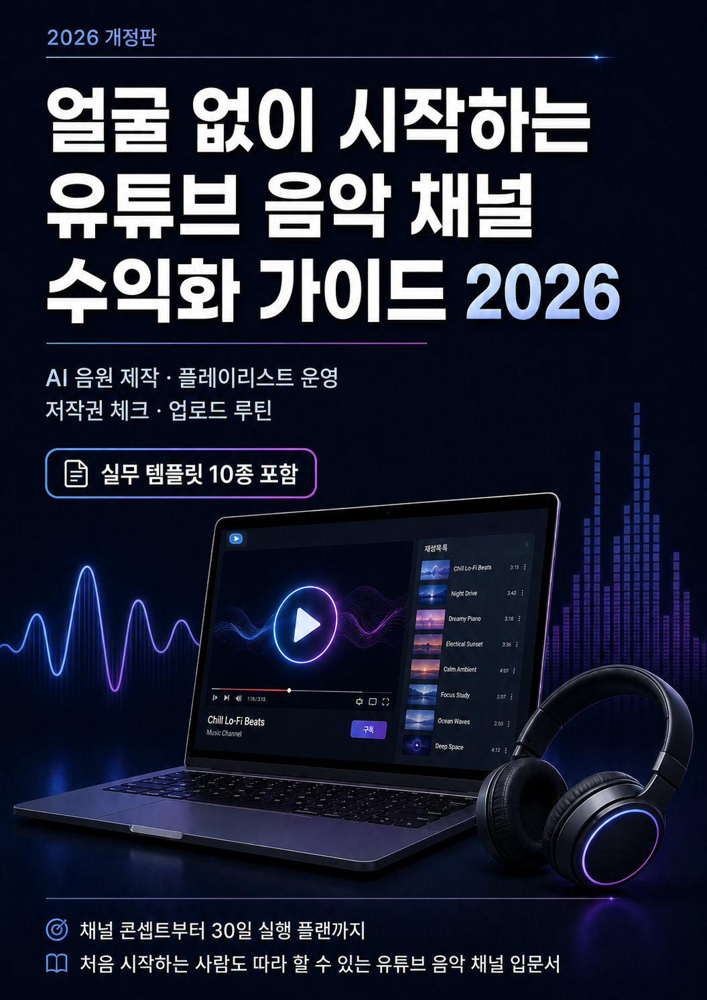
Contents
목차
Copyright Notice
주의할 점 (저작권)
주의할 점
본 전자책의 저작권은 저자에게 있습니다.
본 자료의 내용을 사전 협의 없이 무단으로 복제, 배포, 전송, 2차 가공하여 상업적으로 이용하는 행위를 엄격히 금지합니다.
이를 위반할 경우 저작권법에 의해 민형사상의 책임을 질 수 있습니다.
이 책은 유튜브 음악 채널 운영을 위한 가이드라인을 제공하며, 개인의 노력과 상황에 따라 결과가 다를 수 있습니다.
Prologue
프롤로그: 2026년, 유튜브 음악 채널의
새로운 기회와 현실
핵심 요약
유튜브 음악 채널은 초보자가 시작하기 좋은 부업이지만, 2026년 현재 단순 짜깁기로는 수익을 창출하기 어렵습니다. 단기간 고수익의 환상을 버리고, 유튜브 정책과 저작권 기준에 맞춘 리스크 낮은 채널 설계와 꾸준한 운영이 필요함을 이해하는 것이 첫걸음입니다.
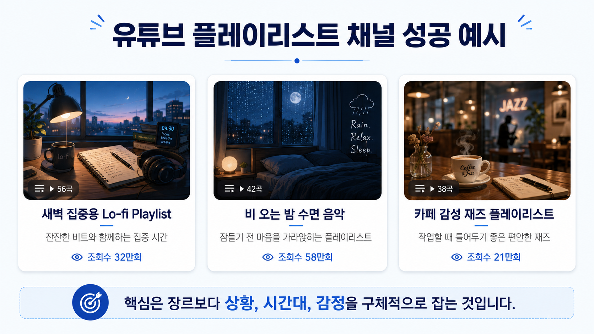
안녕하세요. 얼굴 없이 나만의 음악 채널을 만들어 유튜브 세계에 첫발을 내디디려는 여러분을 진심으로 환영합니다.
유튜브를 시청하다 보면, 수백만 조회수를 기록하는 '플레이리스트 채널'을 흔히 볼 수 있습니다. "나도 내가 좋아하는 음악이나 AI로 만든 음악을 사람들과 공유하면서 수익을 낼 수 있지 않을까?"라는 생각, 한 번쯤 해보셨을 겁니다.
하지만 2026년 현재, 단순히 음악 몇 곡을 짜깁기해서 올리거나 의미 없는 사진 한 장을 띄워두는 것만으로는 유튜브의 깐깐한 알고리즘과 심사에서 좋은 평가를 받기 어렵습니다. 과거처럼 무작정 양으로 승부하거나, 누군가의 콘텐츠를 그대로 가져와 "방치해 두었더니 수익 창출 조건이 되었다"는 식의 기적은 더 이상 흔하게 일어나지 않습니다.
그럼에도 불구하고 유튜브 음악 채널은 여전히 초보자가 '얼굴 없는 부업'으로 시작하기에 가장 매력적인 분야입니다. 올바른 방법으로 채널을 설계하고, 저작권 리스크를 꼼꼼히 확인하며, 시청자에게 특정한 가치(위로, 집중, 휴식 등)를 제공하는 채널은 시간이 지날수록 단단한 팬층을 형성하게 됩니다.
이 전자책은 여러분에게 "하루아침에 수백만 원을 번다"는 허황된 약속을 하지 않습니다. 대신 수익화 가능성을 가장 높일 수 있는 탄탄한 채널 설계법, 저작권 문제없이 AI 음원을 제작하고 무료 영상을 활용하는 방법, 그리고 깐깐해진 유튜브 심사 기준에 맞추기 위한 현실적인 팁들을 꾹꾹 눌러 담았습니다.
마치 옆에서 모니터를 함께 보며 알려주는 멘토처럼, 여러분이 포기하지 않고 첫 영상을 올릴 수 있도록 친절하게 안내해 드리겠습니다.
이 책을 제대로 활용하는 방법
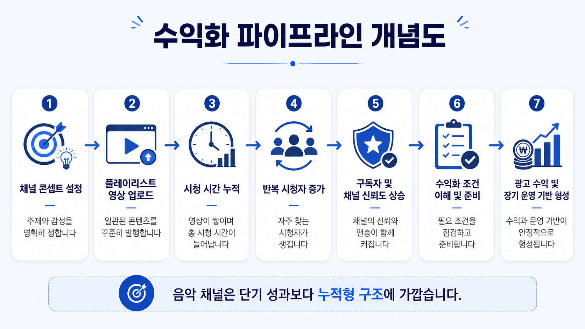
이 책은 단순한 '읽을거리'가 아니라 '실행 가이드'입니다. 눈으로만 읽고 넘어가면 아무것도 변하지 않습니다. 책을 최대한 활용하기 위해 다음 세 가지를 꼭 기억해 주세요.
- 완벽주의를 버리세요: 첫 영상부터 완벽할 필요는 없습니다. 서툴러도 좋으니 각 장의 설명에 따라 직접 클릭해 보고 실행해 보는 것이 가장 중요합니다.
- 템플릿과 체크리스트를 적극 활용하세요: 각 장의 마지막과 부록에는 여러분이 빈칸만 채우면 기획이 완성되는 템플릿과, 실수를 막아주는 체크리스트가 준비되어 있습니다. 단계별로 꼼꼼히 체크하며 진행하세요.
- 나만의 꾸준한 루틴을 만드세요: 음악 채널 성장의 핵심은 '포기하지 않는 꾸준함'입니다. 일주일에 1~2개라도 자신의 페이스에 맞는 업로드 루틴을 설정하고 실천해 보세요.
자, 그럼 노트북을 켜고 나만의 첫 유튜브 채널을 설계할 준비가 되셨나요? 2장에서 본격적인 기획부터 함께 시작하겠습니다.
꼭 기억할 점
꼭 기억할 점
- 2026년 유튜브 음악 채널은 단순 짜깁기가 아닌, 명확한 채널 설계와 가치 제공이 필수적입니다.
- 단기간 고수익 기대에서 벗어나, 탄탄한 구조와 꾸준한 운영으로 접근해야 합니다.
- 이 책은 '읽기용'이 아닌 '실행용' 가이드입니다. 템플릿과 체크리스트를 적극적으로 활용하세요.
바로 해볼 것
바로 해볼 것
- 내가 유튜브 채널을 운영하려는 진짜 목적(월 30만 원 부수입, 취미 생활, 나만의 브랜딩 등)을 메모장에 적어보기
- 일주일에 몇 시간 정도를 채널 운영에 투자할 수 있는지 현실적인 나의 스케줄 확인하기
체크리스트
체크리스트
- 전자책을 끝까지 읽고 실행하겠다는 마음가짐을 가졌는가?
- 단기간의 성과보다 꾸준한 성장을 목표로 설정했는가?
- 매주 유튜브 채널 관리에 투자할 수 있는 시간을 확보했는가?
1장
1장. 유튜브 음악 채널,
지금도 기회가 있을까?
핵심 요약
얼굴이나 목소리 노출 없이 누구나 시작할 수 있는 음악 채널의 장점과, 단순 팝송 모음집을 넘어 '특정 감성과 상황'을 타깃팅하는 2026년 틈새시장 공략법을 배웁니다. 빠른 성과보다 꾸준한 누적 성장을 목표로 해야 합니다.
수많은 부업 아이템 중에서 왜 하필 '유튜브 음악 플레이리스트 채널'일까요? 이번 장에서는 얼굴 없는 음악 채널이 초보자에게 어떤 기회를 제공하는지, 그리고 2026년 현재 시장의 현실은 어떤지 냉정하게 살펴보겠습니다.
1. 초보자에게 부담이 적은
'얼굴 없는' 시작
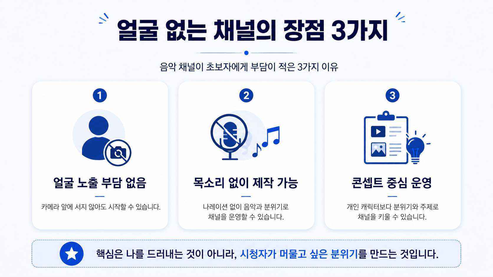
유튜브를 시작하고 싶어도 카메라 앞에 서는 것이 부담스럽거나, 내 목소리가 녹음되는 것이 부끄러워 포기하는 분들이 많습니다. 직장인이나 학생이라면 얼굴이 알려지는 것 자체에 제약이 있을 수도 있죠.
음악 플레이리스트 채널의 가장 큰 장점은 바로 '철저한 익명성'입니다. 화려한 언변이나 특별한 외모, 고가의 촬영 장비가 전혀 필요하지 않습니다. 인터넷이 연결된 컴퓨터 한 대와 음악을 선별하는 감각, 그리고 꾸준함만 있다면 누구나 오늘 당장 시작할 수 있습니다.
특히 2026년에는 AI 기술이 더욱 발달하여, 음악적 지식이 전혀 없는 초보자도 클릭 몇 번만으로 분위기에 맞는 음악을 직접 창작해 낼 수 있는 시대가 되었습니다. '음악'이라는 만국 공통어를 사용하기 때문에, 언어의 장벽 없이 전 세계 시청자를 대상으로 채널을 키워나갈 수 있다는 점도 엄청난 매력입니다.
2. 2026년 시장의 현실:
"레드오션 아닌가요?"
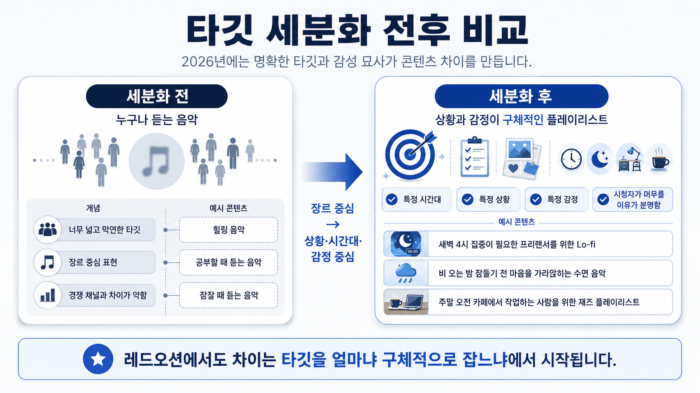
"이미 유튜브에 음악 채널이 너무 많은데, 지금 시작해도 늦지 않았을까요?"
가장 많이 듣는 질문 중 하나입니다. 결론부터 말씀드리면, 단순히 인기 있는 팝송이나 가요를 모아 올리던 과거의 방식은 이미 포화 상태이며, 저작권 문제로 인해 수익을 내기도 매우 어렵습니다. 이런 의미에서는 레드오션이 맞습니다.
하지만 '특정한 상황과 감정을 타깃으로 한 맞춤형 플레이리스트' 시장은 여전히 무궁무진한 기회가 열려 있습니다. 시청자들은 단순히 음악을 듣기 위해 유튜브를 켜지 않습니다.
- "내일 중요한 시험을 앞두고 바짝 집중해야 할 때"
- "퇴근 후 지친 몸을 이끌고 혼자 맥주 한 캔을 마실 때"
- "잠이 오지 않는 새벽, 마음을 편안하게 가라앉히고 싶을 때"
사람들은 자신의 감정을 위로해 주거나 특정 상황에 몰입할 수 있도록 돕는 배경음악(BGM)을 끊임없이 찾습니다. 남들과 똑같은 음악을 올리는 것이 아니라, 특정한 분위기나 테마를 기획하고 그에 맞는 음악과 시각적 요소(영상/이미지)를 결합하여 나만의 '가치'를 제공한다면, 2026년에도 충분히 시청자의 선택을 받을 수 있습니다.
3. 수익화의 현실:
'단기 성과'보다 '파이프라인'
유튜브 음악 채널로 한 달 만에 퇴사할 만큼의 수익을 올렸다는 자극적인 이야기들에 흔들리지 마세요. 음악 채널은 단기 조회수 상승보다는, 시간이 지날수록 조회수가 차곡차곡 누적되는 '연금형' 채널에 가깝습니다.
한 번 잘 만들어둔 '수면용 8시간 플레이리스트' 영상은 몇 달, 심지어 몇 년이 지나도 꾸준히 시청자를 만날 수 있습니다. 단기간에 큰 성과를 내겠다는 조급함을 버리고, 나의 채널이 누군가의 일상에 스며드는 배경음악이 되도록 정성스럽게 채널을 설계해야 합니다. 꾸준한 업로드 루틴이 쌓일 때, 비로소 안정적인 수익화 파이프라인에 가까워집니다.
실전 예시
실전 적용법:
내 채널의 존재 이유 찾기
성공하는 채널에는 명확한 '존재 이유'가 있습니다. 지금 당장 빈 종이나 메모장을 열고 아래의 질문에 답해 보세요.
- 나는 어떤 상황에서 주로 음악을 듣는가? (예: 비 오는 날 출근길, 늦은 밤 책 읽을 때)
- 내가 평소에 즐겨 찾는 유튜브 음악 채널은 어디인가? 그 채널의 매력은 무엇인가?
- 만약 내가 채널을 만든다면, 사람들이 내 채널에 방문했을 때 어떤 '감정'을 느끼고 가길 바라는가? (예: 따뜻한 위로, 활기찬 에너지, 고도의 집중력)
이 세 가지 질문에 대한 답이 앞으로 여러분이 만들 채널의 든든한 뼈대가 될 것입니다.
꼭 기억할 점
꼭 기억할 점
- 음악 채널은 얼굴 노출이나 촬영 장비 없이 시작할 수 있는 가장 접근성 높은 분야입니다.
- 단순 짜깁기가 아닌, 시청자의 특정 상황과 감정에 맞춘 '테마형 플레이리스트'로 틈새시장을 공략해야 합니다.
- 단기간 고수익이 아닌, 장기적으로 조회수가 누적되는 안정적인 수익 파이프라인 구축을 목표로 해야 합니다.
바로 해볼 것
바로 해볼 것
- 내가 가장 좋아하는 분위기의 유튜브 음악 채널 3곳을 찾아 구독하기
- 해당 채널들이 주로 어떤 제목을 쓰고, 어떤 이미지를 사용하는지 가볍게 둘러보기
체크리스트
체크리스트
- 음악 채널이 단기간의 성과보다 꾸준한 누적 성장이 필요함을 이해했는가?
- 시청자에게 어떤 감정이나 상황을 제공할지 나의 관심사를 고민해 보았는가?
- 벤치마킹하고 싶은 참고 채널(롤모델)을 1개 이상 찾았는가?
2장
2장. 2026년 수익화 기준과
주의사항
핵심 요약
유튜브 파트너 프로그램(YPP)의 승인 조건을 파악하고, 초보자들이 가장 많이 겪는 수익 창출 거절 사유(재사용된 콘텐츠, 반복적인 콘텐츠)를 예방하는 방법을 알아봅니다. 리스크를 줄이는 채널 운영을 위한 필수 지침서입니다.
채널을 개설하고 영상을 올리기 전에 반드시 알아두어야 할 것이 있습니다. 바로 유튜브가 어떤 채널에 수익을 허락하고, 어떤 채널을 거절하는지 그 '규칙(Rule)'을 이해하는 것입니다.
과거에는 남의 음악이나 영상을 대충 이어 붙여도 수익이 나던 시절이 있었지만, 2026년의 유튜브 알고리즘과 심사팀은 그 어느 때보다 똑똑하고 엄격합니다. 이번 장에서는 여러분이 헛고생하지 않도록 기본 수익화 기준과 핵심 주의사항을 짚어보겠습니다.
1. 유튜브 파트너 프로그램(YPP)
기본 조건 달성하기
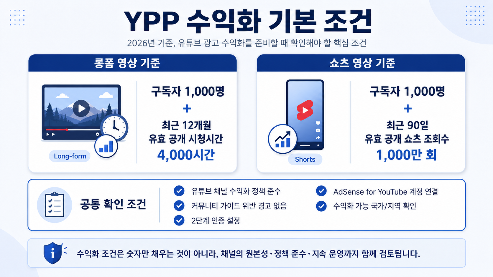
유튜브에서 영상에 광고를 달고 수익을 창출하려면 '유튜브 파트너 프로그램(YPP)'에 가입해야 합니다. 2026년 기준으로 이를 달성하기 위한 기본 조건은 다음과 같습니다. (조건은 유튜브 정책에 따라 변동될 수 있습니다.)
- 구독자 1,000명 이상 달성 (필수)
- 최근 12개월간 공개 시청 시간 4,000시간 이상 OR 최근 90일간 쇼츠(Shorts) 조회수 1,000만 회 이상 달성
유튜브는 일부 기능 접근 기준과 광고 수익 배분 기준을 별도로 운영할 수 있으므로, 신청 전 유튜브 스튜디오 [수익 창출] 탭에서 최신 조건을 다시 확인하세요.
초보자에게 '시청 시간 4,000시간'은 까마득해 보일 수 있습니다. 하지만 음악 채널의 특성상 시청자들은 다른 콘텐츠에 비해 영상을 훨씬 길게(켜두고 방치하는 등) 소비합니다. 따라서 완성도 높은 1시간 이상의 롱폼 플레이리스트를 꾸준히 업로드하면, 일반 정보성 채널보다 시청 시간을 채우는 데 상대적으로 유리합니다.
주의할 점
2. 2026년 가장 주의해야 할
3가지 리스크
기본 조건을 달성했다고 해서 수익 창출이 자동으로 승인되는 것은 아닙니다. 유튜브 심사팀이 채널을 검토할 때 가장 많이 거절(반려)하는 3가지 사유를 우선적으로 피해야 합니다.
첫째, '재사용된 콘텐츠 (Reused Content)'
유튜브는 타인의 콘텐츠를 의미 있는 수정이나 원본에 대한 새로운 가치 부여 없이 단순히 재업로드하는 것을 엄격히 금지합니다.
- 잘못된 예: 유명 가수의 신곡이나 인기 팝송을 1시간 동안 반복 재생되도록 그대로 올리는 행위. (이 경우 저작권 위반뿐만 아니라 재사용된 콘텐츠로 분류되어 수익 창출이 거절될 가능성이 매우 높습니다.)
- 올바른 접근: 직접 창작한 AI 음원을 사용하거나, 무료 음원이라도 나만의 명확한 테마(예: '비 오는 날 카페에서 듣기 좋은 재즈')를 부여하고 큐레이션의 가치를 더해야 합니다.
둘째, '반복적인 콘텐츠 (Repetitive Content)'
유튜브는 자동화된 템플릿으로 대량 생성된 것처럼 보이거나, 시청자에게 교육적/엔터테인먼트적 가치를 제공하지 않는 단순 반복 영상을 싫어합니다. 즉, 반복적이거나 대량생산된 것처럼 보이는 비진정성 콘텐츠로 보이지 않도록 구성해야 합니다.
- 잘못된 예: 1시간짜리 음악 내내 정지된 사진 한 장만 띄워놓고 아무런 시각적 변화나 정보가 없는 영상.
- 올바른 접근: 무료 스톡 영상(Pexels 등)을 활용해 음악의 분위기에 맞게 배경이 은은하게 움직이도록 하거나, 적절한 타이밍에 텍스트(곡 제목 등)가 나타나게 편집하여 시각적인 변화를 주어야 합니다. 영상에 약간의 필터나 화면 전환(트랜지션)을 더하면 반복적인 콘텐츠로 보일 가능성을 줄일 수 있습니다.
셋째, AI 음원과 이미지의 라이선스 (저작권) 무단 사용
AI로 생성한 결과물이라고 해서 자동으로 상업적 이용이 가능한 것은 아닙니다.
- 주의사항: Soundraw, Suno, Midjourney 등 AI 툴을 사용할 때, 무료 요금제로 생성한 결과물은 상업적 이용(유튜브 수익 창출)을 제한하는 경우가 대부분입니다.
- 올바른 접근: AI 음원이나 이미지를 채널에 사용할 계획이라면, 해당 플랫폼의 라이선스 규정을 반드시 확인하고 상업적 이용이 허가되는 플랜과 사용 범위를 확인한 뒤 활용해야 저작권 리스크를 사전에 점검할 수 있습니다. 무료 스톡 영상(Pexels, Pixabay)을 사용할 때도 '상업적 이용 가능 여부'와 '출처 표기 필요 여부'를 꼭 체크하는 습관을 들이세요.
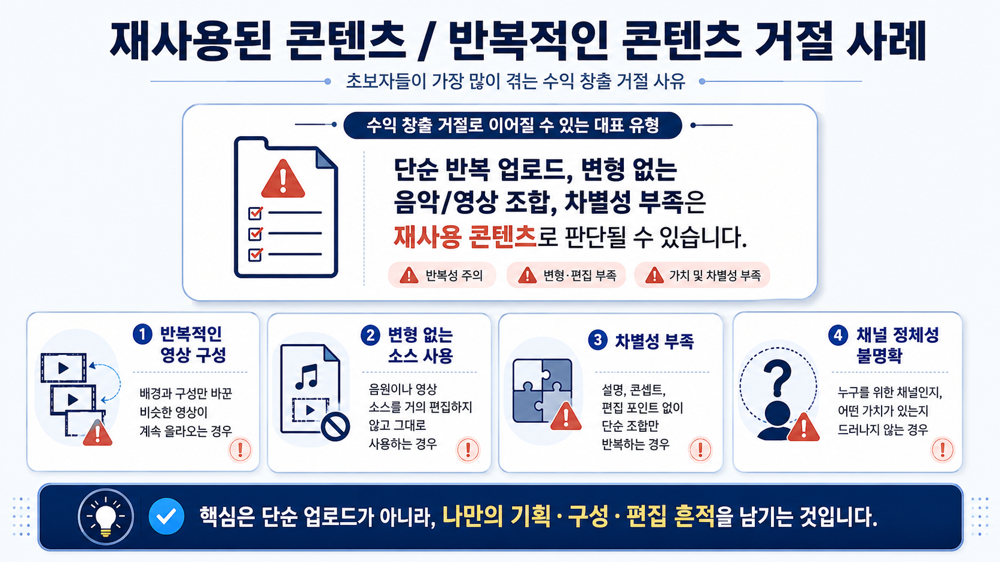
3. 수익 창출 심사,
'채널의 차별성'이 핵심입니다
결국 유튜브가 수익 창출을 승인해 주는 채널은 "기계가 자동 생성한 뻔한 공장형 채널이 아니라, 누군가 정성을 들여 기획하고 시청자에게 특정한 감성과 가치를 제공하는 채널"입니다.
화려한 편집 기술이 필요한 것이 아닙니다. 비슷한 음악을 사용하더라도, 내 채널만의 독특한 제목 감성, 통일감 있는 썸네일 디자인, 진정성 있는 영상 설명란 작성을 통해 '채널의 정체성'을 보여주는 것이 심사에서 긍정적으로 평가받는 중요한 요소입니다.
실전 예시
실전 적용법:
내 채널 리스크 줄이기
채널 운영을 시작하기 전, 다음의 원칙을 마음에 새기세요.
- 타인의 창작물을 훔치지 않는다: 저작권이 있는 음원은 절대 무단으로 믹스하지 마세요.
- 시각적 정성을 들인다: 단 한 장의 사진이라도 필터를 씌우거나 가벼운 애니메이션(줌인/줌아웃 등) 연출을 넣어 성의를 보이세요.
- 가치를 부여한다: "이 영상을 왜 만들었는지" 설명란에 2~3줄이라도 직접 작성하여 알고리즘과 심사자에게 채널의 목적을 어필하세요.
꼭 기억할 점
꼭 기억할 점
- 수익 창출의 기본 조건은 구독자 1천 명과 시청 시간 4천 시간(또는 쇼츠 1천만 회)입니다.
- '재사용된 콘텐츠', '반복적인 콘텐츠' 사유로 수익 창출이 거절되지 않도록 시청각적 변화와 가치를 부여해야 합니다.
- AI 음원 생성 툴과 무료 이미지/영상 사이트 이용 시, 반드시 '상업적 이용 가능 여부'와 라이선스 규정을 확인해야 합니다.
바로 해볼 것
바로 해볼 것
- 평소 즐겨 듣는 플레이리스트 채널 영상을 켜보고, 배경 영상이 정지되어 있는지 미세하게 움직이거나 전환되는지 관찰해 보기
- 앞으로 사용할 AI 음악 툴(예: Soundraw)이나 이미지 사이트의 요금제/라이선스 페이지에서 'Commercial Use(상업적 이용)' 관련 조항 읽어보기
체크리스트
체크리스트
- 수익 창출 심사의 기본 조건(구독자, 시청 시간 등)을 숙지했는가?
- 단순 사진 한 장과 음악만 이어 붙이는 방식(반복 콘텐츠)의 위험성을 이해했는가?
- AI 툴 및 소스 활용 시 상업적 이용 허가 여부를 반드시 확인해야 함을 명심했는가?
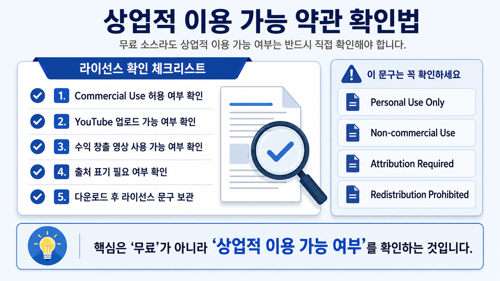
3장
3장. 채널 콘셉트 기획하기
핵심 요약
유튜브 음악 채널의 성공 여부는 화려한 음악이나 편집 기술이 아니라, "내 채널이 누구에게 어떤 감정을 줄 것인가"라는 명확한 콘셉트에 달려 있습니다. 타깃 시청자를 명확히 하고, 검색에 유리한 채널명과 소개글을 세팅하여 수익화 가능성을 높이는 탄탄한 채널을 설계해 봅니다.
꼭 기억할 점
꼭 기억할 점
(이 단계가 중요한 이유)
"아무 음악이나 좋은 곡을 모아서 올리면 누군가는 듣겠지?"
얼굴 없는 음악 채널을 시작할 때 가장 많이 착각하는 부분입니다. 하지만 유튜브 알고리즘은 채널의 성격이 명확할 때 그 채널을 적절한 시청자에게 추천해 줍니다. 어제는 신나는 K-pop을 올렸다가 오늘은 잔잔한 수면 음악을 올리면, 알고리즘은 이 채널이 어떤 채널인지 헷갈려 노출을 멈춥니다. 콘셉트가 흔들리면 구독자가 쌓이지 않고, 결국 수익화 심사 기준(시청 시간 4,000시간)을 채우기 전에 지쳐서 포기하게 됩니다.
주의할 점
초보자가 가장 많이 하는 실수
- 유명 채널 무작정 따라 하기: 타깃이나 이유 없이 "남들이 하니까" 그대로 베끼기.
- 채널명에 모든 것을 담으려는 욕심: '수면 공부 힐링 아침 드라이브 플레이리스트'처럼 정체성이 없는 긴 이름 짓기.
- 타깃 시청자 부재: 누가 언제 내 음악을 들을지 상상하지 않고 본인 취향의 음악만 올리기.
따라하기 쉬운 실행 순서
1. 초보자가 선택하기 좋은 음악 채널 주제 (장르별 차이)
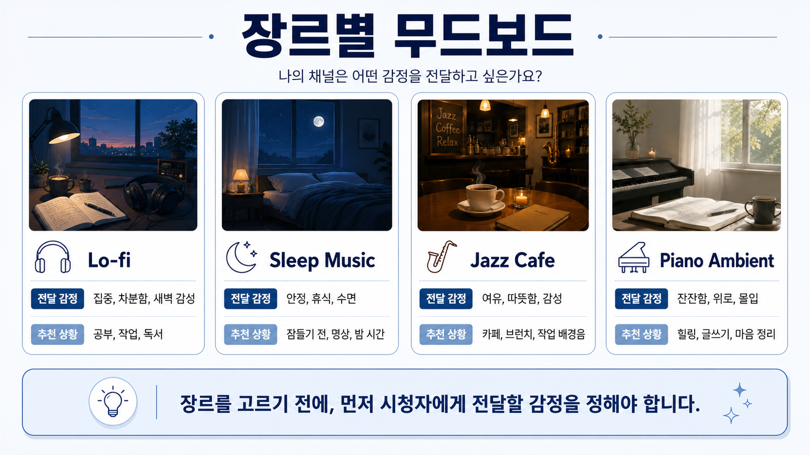
음악 채널은 시청자가 언제, 왜 음악을 찾는지를 기준으로 주제를 정하는 것이 좋습니다.
- 수면 음악: 8시간 이상 긴 영상 위주. 비트가 없고 주파수나 자연의 소리를 결합하는 경우가 많아 초보자도 쉽게 제작 가능. 시청 시간이 매우 빠르게 쌓임.
- 공부/집중 음악: 일정한 비트(Lo-fi 등)가 들어간 1~2시간 분량. 가사가 없고 템포가 일정하여 백색소음처럼 활용됨.
- 명상/힐링 음악: 수면보다는 깨어있지만 마음을 진정시키는 잔잔한 피아노나 어쿠스틱 기타 위주.
- 로파이(Lo-fi) 음악: 특유의 잡음(LP 노이즈 등)과 편안한 힙합 비트를 섞어 트렌디한 감성을 연출. 공부, 독서, 카페 BGM 등 다목적으로 사용됨.
- 아침/활력 음악: 하루를 시작할 때 듣는 경쾌하고 밝은 팝이나 밴드 사운드. 너무 시끄럽지 않고 긍정적인 에너지를 주는 것이 특징.
2. 타깃 시청자 정하는 법
"모두를 위한 채널"은 "아무도 보지 않는 채널"이 됩니다. 타깃은 구체적일수록 좋습니다.
- 나쁜 예: "공부하는 사람"
- 좋은 예: "밤 10시 이후, 혼자 불 꺼진 방에서 외롭게 공무원 시험을 준비하는 20대"
타깃이 뾰족해지면 영상의 썸네일 분위기와 제목을 정하기가 훨씬 쉬워집니다.
3. 채널명 만드는 법
기억하기 쉽고, 검색에 유리해야 합니다. [감성 키워드] + [채널의 정체성] 조합을 추천합니다.
- 예: 아침 햇살 뮤직, 딥슬립 주파수, 로파이 라디오(Lo-fi Radio), 카페BGM 연구소
4. 채널 소개글 작성법
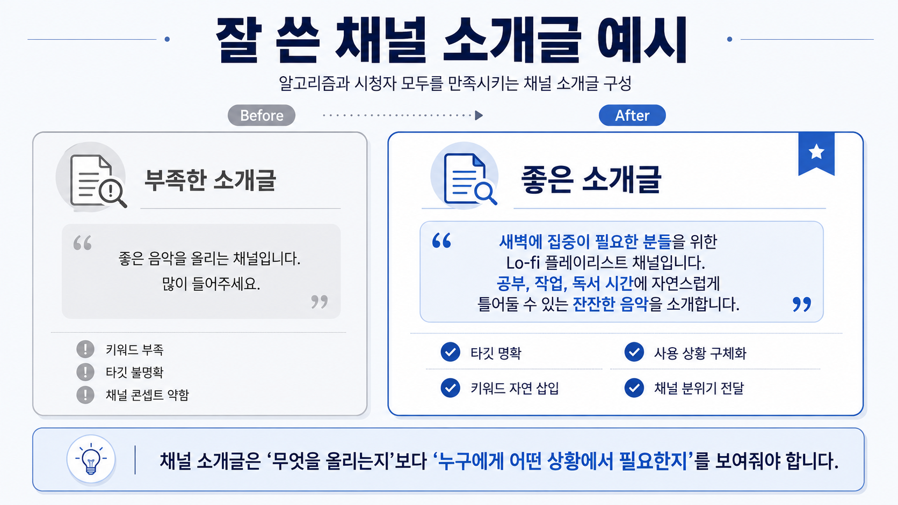
유튜브 검색(SEO)에 걸릴 수 있도록 주요 키워드를 자연스럽게 문장에 녹여내세요.
- 예시: "안녕하세요. [채널명]은 잠들기 전 마음을 차분히 정리하고 싶은 분들을 위해 편안한 수면 음악과 백색 소음을 제공합니다. 매일 밤 10시에 새로운 힐링 플레이리스트가 업로드됩니다."
5. 채널 키워드(태그) 설계법
유튜브 스튜디오 설정에서 채널의 방향성을 알려주는 키워드를 7~10개 정도 세팅합니다.
- 예: 수면 음악, 밤 음악, 차분한 음악, 힐링 음악, 백색 소음, 편안한 플레이리스트
실전 예시
실전 예시
[기본 예시: 기분 좋은 아침 음악 채널]
- 채널명: 모닝바이브 (Morning Vibes)
- 타깃 시청자: 출근길 지옥철에서 스트레스받는 30대 직장인
- 소개글: "모닝바이브는 바쁜 아침, 당신의 하루를 긍정적인 에너지로 채워주는 상쾌한 플레이리스트를 만듭니다."
[확장 예시: 수면 음악 채널]
- 채널명: 굿나잇 팩토리
- 타깃 시청자: 잠들기 전 마음이 분주한 40~50대
- 소개글: "복잡한 생각은 내려놓으세요. 굿나잇 팩토리가 편안한 자연의 소리와 차분한 수면 음악으로 휴식 시간을 도와드립니다."
[확장 예시: 로파이(Lo-fi) 채널]
- 채널명: 새벽 두 시의 로파이
- 타깃 시청자: 새벽 감성으로 다이어리를 꾸미거나 코딩하는 20대 대학생
- 소개글: "과제와 코딩으로 지새우는 밤, 집중력을 높여주는 부드러운 로파이 비트와 함께하세요."
템플릿
[부록 참고]
채널 콘셉트 기획표 작성해보기
전자책 9장 부록에 제공된 템플릿을 참고하여 아래 항목을 빈칸 채우듯 적어보세요.
- 나의 채널명:
- 핵심 타깃: (나이, 직업, 현재 상황)
- 제공할 감정: (위로, 집중, 활력 등)
- 업로드 주기: (주 1회, 주 2회 등 현실적인 목표)

꼭 기억할 점
꼭 기억할 점
- 얼굴 없는 음악 채널은 "내 음악이 누구의 어떤 상황에 필요한가"를 정의하는 것이 시작입니다.
- 일관된 콘셉트를 유지해야 유튜브 알고리즘이 채널의 성격을 파악하고 타깃 시청자에게 노출해 줍니다.
- 채널명, 소개글, 키워드에 타깃 시청자가 검색할 만한 단어를 배치하여 초기 검색 노출 확률을 높이세요.
바로 해볼 것
바로 해볼 것
- 내가 운영하고 싶은 음악 채널의 주제(수면, 공부, 아침 등) 한 가지를 확정하기
- 메모장을 열고 '채널 콘셉트 기획표'의 빈칸을 직접 채워보기
체크리스트
체크리스트
- 나의 채널이 어떤 상황의 누구를 위한 것인지 한 줄로 설명할 수 있는가?
- 채널 이름에 채널의 정체성이나 분위기가 잘 담겨 있는가?
- 유튜브 스튜디오에 채널 소개글과 기본 채널 키워드 세팅을 완료했는가?
4장
4장. AI 음원 제작하기
핵심 요약
기존의 남의 음악을 짜깁기하는 방식은 2026년 현재 수익 창출이 거의 불가능합니다. 하지만 우리는 AI 기술을 통해 저작권 문제를 줄이면서 나만의 고품질 음원을 꾸준히 만들어낼 수 있습니다. 이번 장에서는 초보자도 쉽게 AI로 채널 콘셉트에 맞는 음악을 생성하고 플레이리스트를 구성하는 방법을 배웁니다.
꼭 기억할 점
꼭 기억할 점
(이 단계가 중요한 이유)
"무료 음원이니까 그냥 써도 되겠지?"
이 안일한 생각 하나가 1년 동안 힘들게 키운 채널을 한순간에 날려버릴 수 있습니다. 직접 만든 AI 음원을 사용하면 다른 채널과의 중복(재사용 콘텐츠)을 피할 수 있고, 저작권 침해 신고(스트라이크) 가능성을 줄일 수 있습니다. 안정적인 채널 구조를 설계하는 가장 핵심적인 단계입니다.
주의할 점
초보자가 가장 많이 하는 실수
- 무료 요금제로 상업적 수익 창출 시도: 대부분의 AI 음악 툴은 무료 버전에 대해 '상업적 이용(Commercial Use)'을 금지합니다.
- 비슷한 곡만 1시간 내내 반복: 한 곡을 단순히 1시간 동안 복사+붙여넣기 하면 '반복적인 콘텐츠'로 유튜브 심사에서 반려됩니다.
- 분위기에 맞지 않는 무분별한 곡 섞기: 수면 채널에 갑자기 드럼 비트가 강한 곡을 넣는 식의 일관성 없는 플레이리스트 구성.
따라하기 쉬운 실행 순서
1. 제작 전 필수 확인: 저작권과 라이선스 기준
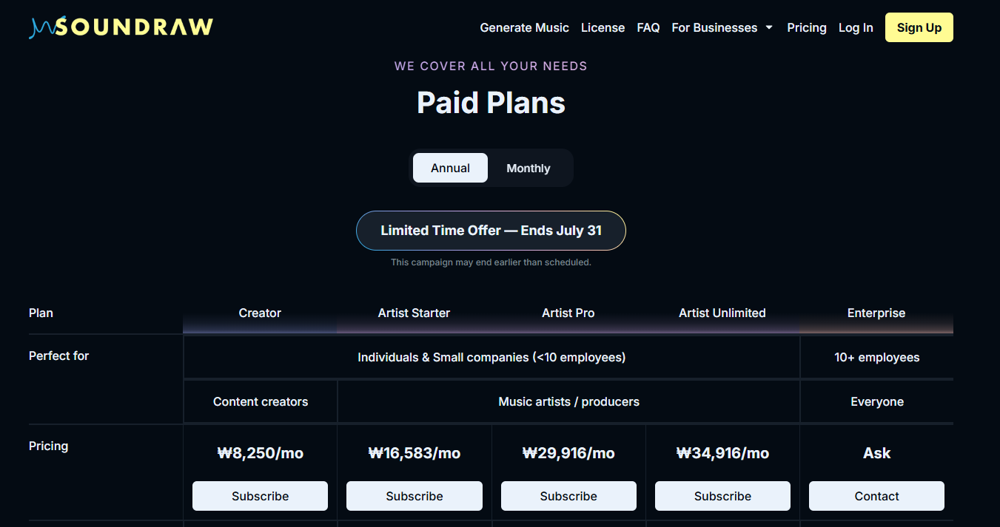
Soundraw 라이선스 확인 흐름
AI 도구를 선택할 때는 홈페이지의 Pricing(요금제)이나 FAQ 페이지에서 반드시 아래 문구를 확인해야 합니다.
- "Can I monetize on YouTube?" (유튜브 수익 창출이 가능한가요?)
- "Commercial Use allowed" (상업적 이용 가능 여부)
주의: Soundraw, Suno, Udio 등 대부분의 도구는 유료 플랜(구독) 상태에서 생성한 곡에 한해서만 상업적 이용을 허가합니다. 초기 투자 비용이 발생할 수 있으므로, 구독 전 상업적 이용 조건과 필요한 플랜을 직접 확인해야 합니다.
라이선스 확인 5단계
라이선스 확인 5단계
- Commercial Use 허용 여부 확인
- YouTube 수익 창출 가능 여부 확인
- 출처 표기 필요 여부 확인
- 다운로드 후 사용 범위 확인
- 약관 변경 가능성에 대비해 캡처 보관
2. 초보자를 위한 AI 음원 도구 선택 (Soundraw 중심)
- Soundraw (사운드로우): 이 가이드에서 주로 사용할 도구입니다. 장르, 무드, 템포만 클릭하면 수십 곡을 뚝딱 만들어주어 초보자에게 가장 직관적이고 편합니다.
- Suno (수노) / Udio (우디오): 2026년 현재 보컬(가사)이 들어간 곡을 만드는 데 매우 탁월합니다. 프롬프트(명령어)를 직접 텍스트로 입력해야 하므로 약간의 연습이 필요하지만 퀄리티가 뛰어납니다.
3. Soundraw로 내 채널에 맞는 음악 뽑아내기
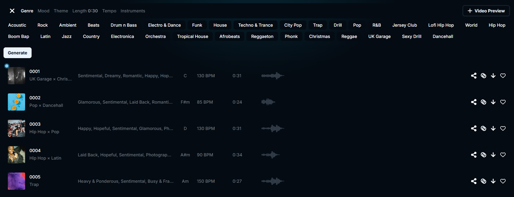
AI 음원 생성 화면 구조
- 가입 및 접속: Soundraw.io에 접속하여 구글 계정으로 로그인합니다.
- 음악 생성(Create Music): 메인 화면 우측 상단의 'Create Music' 버튼을 클릭합니다.
- 조건 설정: 아래 항목들을 내 채널 콘셉트에 맞게 하나씩 클릭하며 세팅합니다.
- Length (길이): 한 곡당 3~5분 정도가 플레이리스트 구성에 적합합니다.
- Tempo (템포): 곡의 속도. (수면/명상 → Slow, 일반적인 배경음악 → Normal, 운동 → Fast)
- Genre (장르): 곡의 뼈대. (예: 아침 음악 → Pop, Acoustic / 수면 음악 → Ambient / 공부 → Lofi Hip Hop)
- Mood (무드): 곡의 감정. (예: Happy, Peaceful, Laid Back, Relaxing)
- 결과물 확인 및 수정: 10~15초 정도 기다리면 15곡 정도가 자동으로 생성됩니다. 재생 버튼을 눌러 들어보고, 마음에 드는 곡은 'Download' 버튼을 눌러 PC에 저장합니다. (필요 시 'Edit' 버튼을 눌러 'Instruments(악기)' 기능에서 너무 강한 드럼 소리 등을 끄거나 조절할 수 있습니다.)
4. 플레이리스트 구성 및 "반복 콘텐츠" 피하는 법
단순 반복 콘텐츠로 찍히지 않으려면 1시간짜리 영상을 만들 때 최소 10~15곡 이상의 서로 다른 곡을 이어 붙여야 합니다.
- Soundraw에서 내 콘셉트에 맞는 곡을 10곡 정도 생성하여 다운로드합니다.
- 비슷한 분위기 안에서도 템포나 악기 구성이 미세하게 다른 곡들을 자연스럽게 교차 배치합니다.
실전 예시
실전 예시:
AI 음원 제작 프롬프트(세팅) 예시
[기본 예시: 기분 좋은 아침 음악]
- 툴: Soundraw
- 세팅: Genre (Acoustic, Pop) + Mood (Happy, Hopeful) + Tempo (Normal) + Instruments (어쿠스틱 기타, 피아노 위주, 드럼은 가볍게)
[확장 예시: 수면 음악]
- 툴: Soundraw
- 세팅: Genre (Ambient) + Mood (Peaceful, Dark) + Tempo (Slow) + Instruments (드럼/퍼커션 완전 음소거, 신디사이저와 부드러운 패드 사운드 강조)
[확장 예시: 카페/공부용 로파이(Lo-fi) 음악]
- 툴: Suno (프롬프트 입력 방식)
- 명령어 예시: "Chill lo-fi hip hop instrumental, no vocals, vinyl crackle, mellow piano, slow boom bap drum, perfect for studying and relaxing, jazz chords" (보컬 없는 편안한 로파이 힙합, 바이닐 노이즈, 부드러운 피아노, 공부와 휴식에 적합한 재즈 코드)
(※ 9장 부록에 더 다양한 템플릿이 준비되어 있습니다.)
5장
5장. 영상 소스와 편집하기
핵심 요약
유튜브는 '오디오' 플랫폼이 아니라 '비디오' 플랫폼입니다. 음악이 메인일지라도 시각적인 요소가 부족하면 시청자는 금방 이탈하고, 유튜브 심사팀은 채널의 가치를 낮게 평가합니다. 저작권 없는 무료 고화질 영상 소스를 활용하여 '재사용된 반복 콘텐츠'의 덫을 피하고, 영상 편집 툴로 1시간짜리 영상을 조립하는 방법을 배웁니다.
꼭 기억할 점
꼭 기억할 점
(이 단계가 중요한 이유)
"음악이 좋으면 화면은 까맣게 둬도 되지 않나요?"
절대 아닙니다. 2026년 유튜브 수익화 심사에서 가장 많이 떨어지는 이유가 바로 '정지된 화면 1장만 띄워놓는 플레이리스트'입니다. 유튜브는 시청자에게 '시각적 만족감이나 의미 있는 변화'를 제공하는 영상을 선호합니다. 화려한 CG나 자막이 필요한 것은 아니지만, 최소한 음악의 분위기를 살려주는 부드러운 움직임과 화면 전환이 들어가야 수익화 심사에서 반복 콘텐츠로 보일 가능성을 줄일 수 있습니다.
주의할 점
초보자가 가장 많이 하는 실수
- 정체불명의 사진 펌핑: 구글 이미지 검색에서 아무 사진이나 캡처해서 쓰다가 저작권 철퇴를 맞기.
- 라이선스 미확인: 무료 영상 사이트라도 출처 표기 의무(CC-BY)가 있는 영상을 출처 없이 사용하기.
- 가만히 있는 이미지 1시간 재생: 아무런 움직임 없는 사진 1장과 음악만으로 영상을 구성하여 수익 심사에서 거절당하기.
따라하기 쉬운 실행 순서
1. 무료 영상 소스 찾기 (Pexels, Pixabay 등)
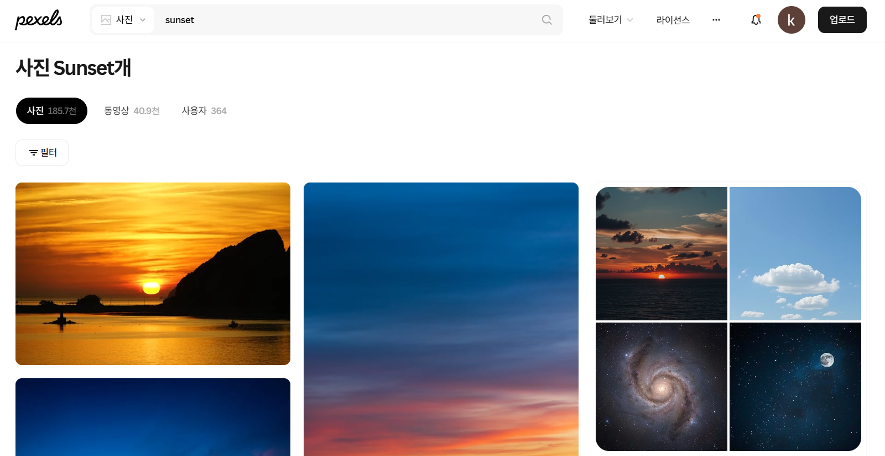
무료 영상 소스 검색 흐름
비디오 소스 전용 사이트인 Pexels(픽셀즈)나 Pixabay(픽사베이)를 활용하면 고화질 영상을 무료로 얻을 수 있습니다.
- 검색 팁: 한글보다는 영어로 검색해야 훨씬 많은 결과가 나옵니다. (예: 아침 → Morning sun, 커피 → Coffee pouring, 수면 → Night sky, Rain window)
- 라이선스 확인: 다운로드 전 라이선스 규정을 확인하세요. Pexels의 경우 대부분 상업적 이용이 가능하고 출처 표기가 필수는 아니지만, 명시해 주는 것이 채널의 신뢰도를 높이는 데 좋습니다.
2. 초보자용 영상 편집 툴 선택 (Filmora, CapCut 등)
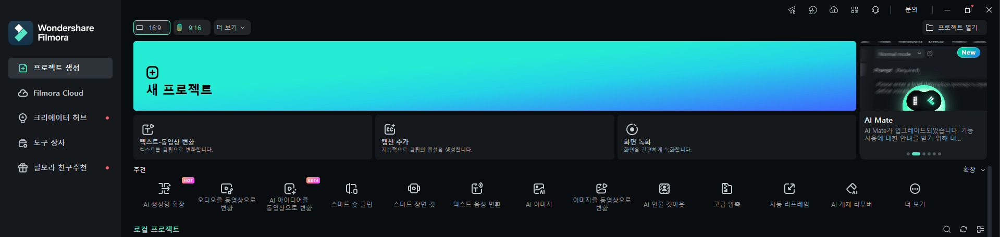
영상 편집 타임라인 화면 구조
- Filmora (필모라) / CapCut (캡컷): 초보자가 직관적으로 다루기 가장 쉬운 프로그램들입니다. 영상 자르기, 배경음악 넣기, 화면 전환 등 필수 기능이 매우 간편합니다. (단, 워터마크 없이 상업적으로 쓰려면 연간 구독 등 유료 버전을 권장합니다.)
3. '반복 콘텐츠'를 피하는 편집 기술 (가장 중요!)
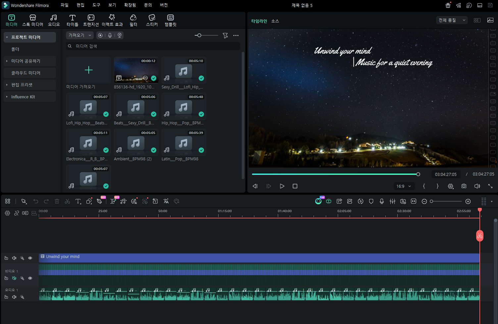
반복 콘텐츠를 피하는 편집 포인트
다운받은 10~20초짜리 짧은 영상을 1시간으로 늘릴 때, 그냥 복붙만 하면 '기계적인 반복 콘텐츠'로 분류됩니다. 이를 피하기 위해 편집 툴에서 아래 3가지 조미료를 쳐야 합니다.
- 줌인 / 줌아웃 연출 (팬 앤 줌): 정지된 사진을 부득이하게 쓸 경우, 서서히 화면이 다가오거나 멀어지는 움직임을 넣어 생동감을 줍니다.
- 트랜지션 (화면 전환): 영상 클립과 클립이 넘어갈 때, '디졸브(서서히 겹치며 넘어감)' 전환을 넣어 끊김 없이 부드럽게 연결하세요.
- 텍스트 필터 추가: 영상 한쪽에 플레이리스트 제목이나, 은은하게 눈 내리는 필터, 빛 번짐(Light leak) 필터를 투명하게 덧씌우면 원본 소스와는 다른 완전히 새로운 영상으로 인식됩니다.
4. 1시간 플레이리스트 조립하기
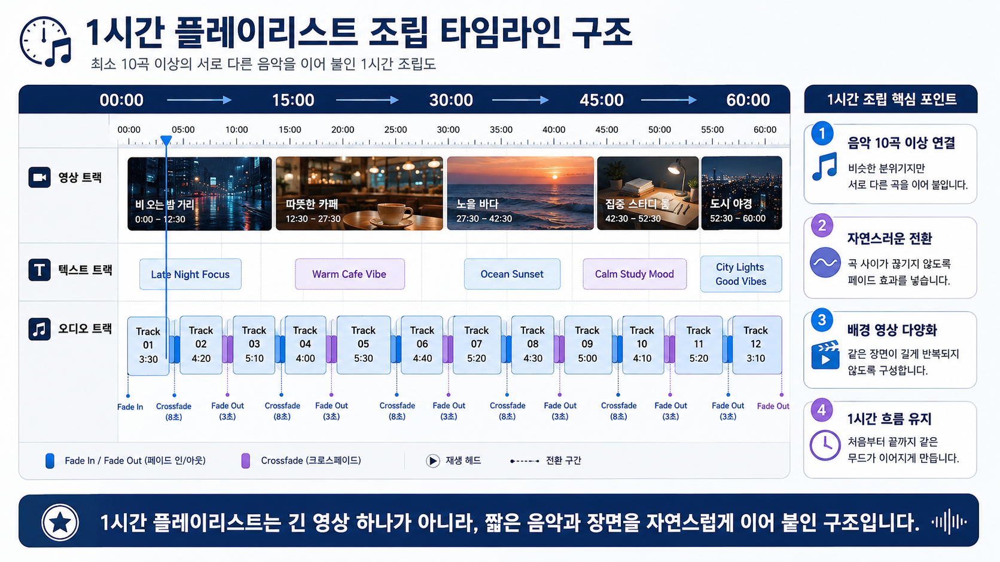
- 프로젝트 생성: CapCut PC 버전을 실행하고 '새 프로젝트(New Project)'를 클릭합니다.
- 소스 불러오기: 다운받은 영상 클립과 AI 음원 파일들을 화면 좌측 상단의 '가져오기(Import)' 영역으로 드래그 앤 드롭합니다.
- 오디오 배치: 하단의 타임라인 영역(작업 공간)으로 음악 파일들을 하나씩 끌어내려 순서대로 배치합니다. 1시간 분량이 될 때까지 10~15곡을 이어 붙입니다.
- 비디오 배치: 음악 트랙 바로 위쪽 빈 공간(비디오 트랙)으로 영상 클립을 끌어다 놓습니다. 영상 클립 끝부분을 마우스로 잡고 늘리거나 복사/붙여넣기 하여 음악 길이(1시간)에 맞게 채워줍니다.
- 화면 전환(트랜지션) 적용: 좌측 상단 메뉴 중 '전환(Transitions)'을 클릭하고 '디졸브(Dissolve)' 전환을 찾아, 영상과 영상이 만나는 컷(경계선) 사이에 마우스로 끌어다 놓아 부드럽게 이어지게 합니다.
- 텍스트 추가: 좌측 상단 '텍스트(Text)' 메뉴에서 기본 텍스트를 추가하고, 다음 곡이 시작될 때 우측 하단에 [다음 곡: 곡 제목]이 5초간 떴다 사라지도록 배치하여 시청 지속 시간을 늘립니다.
- 내보내기(렌더링): 조립이 끝나면 우측 상단의 '내보내기(Export)' 버튼을 클릭하고, 해상도를 1080p(Full HD) 이상으로 설정한 뒤 최종 영상을 컴퓨터에 저장합니다.
실전 예시
실전 예시:
시각 소스 매칭 아이디어
[기본 예시: 기분 좋은 아침 음악]
- 영상 소스 검색어: Morning coffee, Sunshine window, Walking park, Making breakfast
- 편집 포인트: 아침 햇살이 들어오는 창가나 커피를 내리는 영상을 사용. 화면 전환은 밝고 부드럽게 '크로스 디졸브' 사용. 영상 중앙에 "Good Morning"이라는 예쁜 폰트의 텍스트 배치.
[확장 예시: 수면/휴식 음악]
- 영상 소스 검색어: Dark night sky, Rain falling, Starry night, Cozy bedroom
- 편집 포인트: 수면 음악은 시청자가 눈을 감고 듣지만, 화면이 너무 밝으면 방해가 됩니다. 영상의 밝기를 인위적으로 낮추고(어둡게 설정), 비 내리는 창밖이나 별이 빛나는 밤하늘 영상을 1시간 내내 아주 느리게 교차 재생시킵니다.
[확장 예시: 로파이(Lo-fi) 코딩/공부 음악]
- 영상 소스 검색어: Typing keyboard, Neon city night, Rainy window cafe
- 편집 포인트: 빈티지한 로파이 감성에 맞게 편집 툴에서 'VHS 테이프 노이즈 필터'를 전체 화면에 살짝 입혀주면 몰입감이 두 배로 살아납니다.
꼭 기억할 점
꼭 기억할 점
- 아무리 음악 채널이어도 시각적인 변화가 없는 정지 영상은 유튜브 심사에서 불이익을 받습니다.
- Pexels 등의 무료 사이트를 활용하되, 상업적 이용 가능 라이선스인지 체크하세요.
- 트랜지션(화면 전환), 줌인/줌아웃, 텍스트, 가벼운 필터를 입혀 나만의 독창적인 비디오를 조립해 내는 것이 핵심입니다.
바로 해볼 것
바로 해볼 것
- Pexels.com에 접속해 영어로 내 채널 콘셉트 단어를 검색하고, 마음에 드는 영상 클립 5개 다운로드해 보기
- 내 컴퓨터에 CapCut이나 Filmora를 설치하고 영상 클립 불러오기 연습하기
체크리스트
체크리스트
- 무료 영상 소스 사용 시 라이선스 범위(상업적 이용 가능 여부)를 확인했는가?
- 정지된 사진 1장으로 1시간을 때우지 않고 비디오 클립을 이어 붙일 준비가 되었는가?
- 기계적 반복으로 보이지 않게 화면 전환(디졸브)이나 텍스트를 넣을 계획을 세웠는가?
6장
6장. 유튜브 업로드 최적화
핵심 요약
정성껏 만든 음악과 영상을 세상에 내보내는 마지막 관문입니다. 유튜브 스튜디오 업로드 과정은 단순히 파일을 올리는 것이 아니라, 내 영상이 누구에게 노출될지 알고리즘에게 '명함'을 건네는 작업입니다. 검색에 걸리는 제목 짓기부터 설명란, 태그, 그리고 저작권 검토 탭 확인까지 업로드의 모든 최적화 과정을 배웁니다.
꼭 기억할 점
꼭 기억할 점
(이 단계가 중요한 이유)
"노래가 좋으면 알아서 알고리즘이 띄워주겠지?"
틀렸습니다. 신생 채널의 영상은 초기에 유튜브 검색 결과나 추천 목록에 걸리지 않으면 아무도 클릭하지 않습니다. 알고리즘은 영상 내용 자체보다 여러분이 적어 넣은 제목, 설명란, 태그의 텍스트를 먼저 읽고 영상을 분석합니다. 업로드 최적화를 대충 넘기면, 여러분의 피땀 어린 영상은 유튜브라는 거대한 바다에서 아무도 찾지 못하는 무인도가 되어버립니다.
주의할 점
초보자가 가장 많이 하는 실수
- 일기장 같은 제목 짓기: "오늘 만든 음악입니다." (검색량 0의 최악의 제목)
- 해시태그 무분별 남발: 본문과 관련 없는 태그를 100개씩 넣어 스팸 처리되기.
- 업로드 전 '저작권 검토 탭' 무시: 업로드 처리 중 뜨는 저작권 경고를 무시하고 그대로 발행해 버리기.
따라하기 쉬운 실행 순서
1. 검색 노출과 클릭을 고려한 제목 짓기
제목은 [핵심 키워드] + [상황/감정 묘사] 두 가지가 조합되어야 합니다.
- 나쁜 예: 아침 음악 모음집 1번
- 좋은 예: 기분 좋은 아침을 여는 음악 | 하루를 상쾌하게 시작하는 긍정 팝 플레이리스트
2. 알고리즘에 친절한 설명란 작성법
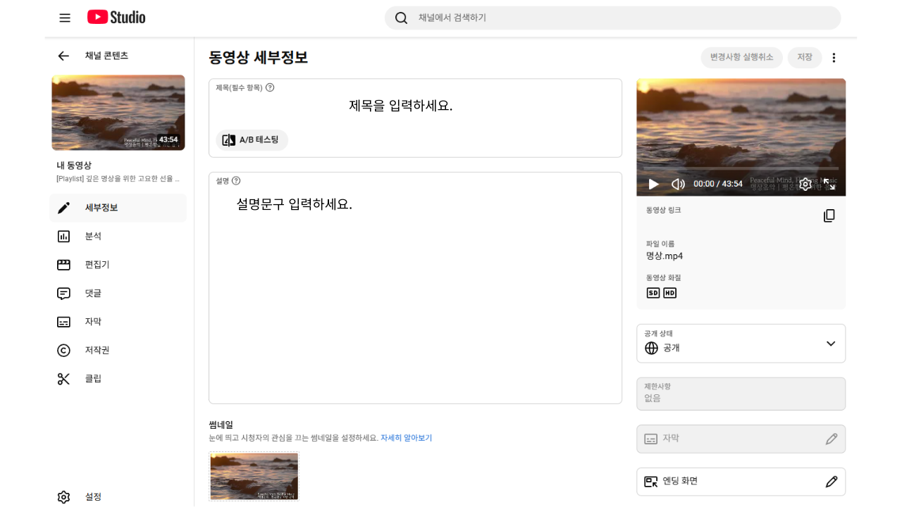
업로드 세부정보 입력 순서
영상 설명란의 첫 2~3줄은 시청자와 알고리즘 모두에게 노출되는 황금 구역입니다. 영상의 목적과 키워드를 문장으로 부드럽게 녹여내세요.
- 곡의 타임스탬프(00:00 곡 이름 1 / 03:20 곡 이름 2)를 넣어주면 시청자 편의성이 높아져 시청 지속 시간에 큰 도움이 됩니다.
- 제일 하단에는 소통을 요청하는 댓글 문구를 넣어주세요. (예: "오늘 하루 어떤 음악이 가장 마음에 드셨나요? 댓글로 남겨주세요!")
3. 태그(Tag)와 해시태그(#)의 차이 완벽 이해
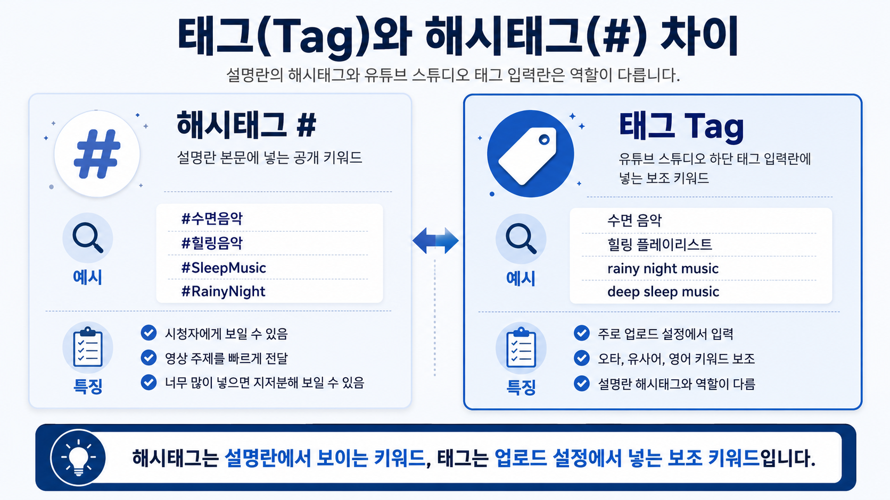
- 해시태그(#): 설명란 본문에 파란색 링크로 달리는 태그입니다. 너무 많이 달면 지저분해 보이고 스팸 처리될 수 있으니 딱 3개만 넣으세요. (예: #아침음악 #출근길음악 #팝플레이리스트)
- 태그(Tag): 업로드 하단 '자세히 보기'를 누르면 나오는 박스입니다. 유튜브 검색에 도움을 주며, 영상과 직결된 단어들을 쉼표로 구분해 7~10개 정도 넣습니다. (예: 아침 플레이리스트, 기분 좋아지는 음악, 모닝콜 음악 등)
4. 썸네일 문구 작성법
썸네일 이미지는 복잡하면 안 됩니다. 핸드폰의 작은 화면에서도 한눈에 들어오도록 이미지 여백에 짧고 강렬한 텍스트 1~2줄만 배치하세요. (예: "눈뜨자마자 듣는 기분 좋은 음악")
5. 업로드 전 '저작권 검토' 단계 확인하기
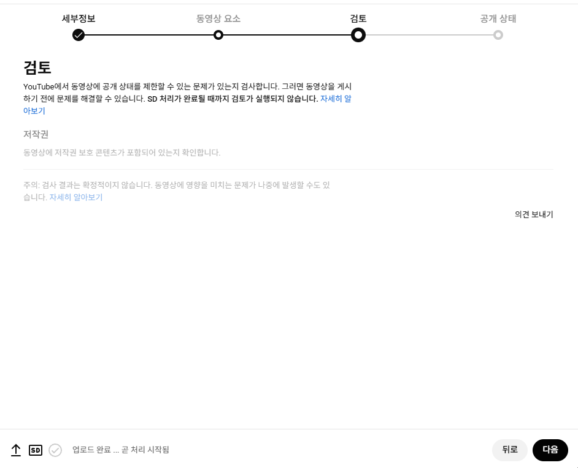
검토 탭 → 저작권 → 발견된 문제 없음 확인
유튜브 스튜디오에서 영상을 업로드할 때 [검토] 단계에서 5~10분 정도 소요됩니다. 이때 화면에 "발견된 문제 없음 (No issues found)"이라는 초록색 체크마크가 뜨는 것을 반드시 눈으로 확인한 뒤 공개(또는 예약) 버튼을 눌러야 합니다. 만약 저작권 침해 경고가 뜨면 해당 곡을 삭제하고 다시 편집해야 채널 운영 리스크를 줄일 수 있습니다.
6. 재생목록 구성과 예약 업로드 루틴
- 비슷한 분위기의 영상은 '아침 팝', '새벽 수면' 등 재생목록으로 묶어주면 연속 재생으로 이어질 수 있습니다.
- 밤낮없이 업로드하지 마시고, 주말에 2~3개를 미리 만들어 둔 뒤 타깃 시청자가 가장 많이 유튜브를 켜는 시간(예: 수면 음악은 밤 9시, 아침 음악은 아침 6시)에 예약 업로드를 걸어두세요.
실전 예시
실전 예시
[기본 예시: 기분 좋은 아침 음악]
- 제목: 월요병이 싹 사라지는 기분 좋은 아침 음악 | 출근길 에너지 충전 플레이리스트
- 설명란 첫 줄: "상쾌한 아침 공기처럼 당신의 하루를 긍정 에너지로 채워줄 아침 플레이리스트입니다. 커피 한 잔과 함께 가볍게 하루를 시작해 보세요!"
- 해시태그: #아침음악 #출근길 #모닝팝
[확장 예시: 수면 음악]
- 제목: 잠들기 전 마음을 차분하게 해주는 수면 음악 | 밤 음악과 편안한 빗소리 8시간
- 설명란 첫 줄: "오늘 하루도 수고 많으셨습니다. 머릿속 복잡한 생각은 모두 내려놓고, 편안한 빗소리와 잔잔한 피아노 선율에 몸을 맡겨보세요. 편안한 휴식에 도움이 되도록 구성했습니다."
- 해시태그: #수면음악 #밤음악 #백색소음
(※ 9장 부록에 100개의 제목 예시와 설명란 템플릿이 준비되어 있습니다.)
꼭 기억할 점
꼭 기억할 점
- 업로드 시 제목과 설명란은 유튜브 알고리즘이 내 영상을 분류하는 가장 중요한 기준표입니다.
- 핵심 키워드와 상황 묘사가 결합된 클릭하고 싶은 제목을 지어야 합니다.
- 업로드 검토 단계에서 "발견된 문제 없음"을 확인하여 저작권 리스크를 사전에 점검하세요.
바로 해볼 것
바로 해볼 것
- 내가 만들 첫 영상의 [가제목]과 사용할 [해시태그 3개]를 미리 메모장에 적어보기
- 언제 업로드하면 내 타깃 시청자가 가장 많이 볼지 업로드 시간 정해보기
체크리스트
체크리스트
- 제목에 검색 키워드와 클릭을 고려한 감성 묘사가 함께 들어갔는가?
- 설명란에 타임스탬프와 소통을 요청하는 댓글 문구를 포함했는가?
- 유튜브 스튜디오 검토 단계에서 저작권 관련 '발견된 문제 없음' 마크를 확인했는가?
7장
7장. 숏츠 확장 전략
핵심 요약
1시간짜리 롱폼(긴 영상) 플레이리스트는 시청 시간을 쌓는 데 유리하지만, 신생 채널이 초기에 시청자에게 노출되기는 매우 어렵습니다. 이때 채널의 엔진 역할을 해주는 것이 바로 숏츠(Shorts)입니다. 숏츠로 트래픽(조회수)을 끌어모으고, 외부 플랫폼을 활용해 채널의 초기 성장 기반을 다지는 무리 없는 확장 전략을 배웁니다.
꼭 기억할 점
꼭 기억할 점
(이 단계가 중요한 이유)
"숏츠 올리면 조회수는 잘 나오는데 돈은 안 된다던데요?"
반은 맞고 반은 틀린 이야기입니다. 음악 채널에서 숏츠를 올리는 주된 목적은 '숏츠 자체의 광고 수익'이 아닙니다. 숏츠 알고리즘은 롱폼 영상보다 무작위 노출 빈도가 훨씬 높기 때문에, 채널을 알지도 못했던 새로운 사람들을 내 채널로 데려오는 '전단지' 역할을 합니다. 숏츠로 들어온 시청자가 롱폼 영상을 클릭하게 만드는 구조를 짜면, 구독자와 시청 시간이 점진적으로 상승하는 구조를 만들 수 있습니다.
주의할 점
초보자가 가장 많이 하는 실수
- 맥락 없는 숏츠 업로드: 수면 음악 채널인데 갑자기 유행하는 댄스 숏츠를 올리면 구독자가 이탈합니다.
- 롱폼 영상으로 연결 실패: 숏츠만 보고 나가버리게 방치하여 정작 중요한 1시간짜리 플레이리스트 조회수는 0이 되는 현상.
- 무분별한 외부 플랫폼 수익 기대: "가입만 하면 숏츠 1개당 10만 원" 같은 과장 광고를 믿고 본질(채널 성장)을 놓치는 행위.
따라하기 쉬운 실행 순서
1. 음악 채널에서 만들 수 있는 숏츠 주제 예시
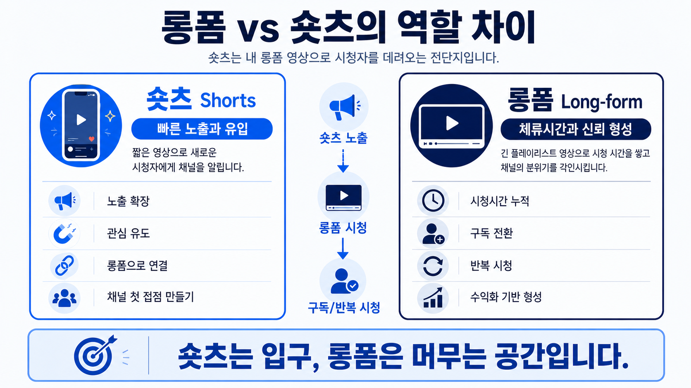
내 채널의 콘셉트와 맞닿아 있는 짧은 영상을 기획해야 합니다.
- 아침 음악 채널: "아침 7시에 들으면 하루가 상쾌해지는 곡" (하이라이트 15초 재생)
- 로파이 채널: "과제할 때 집중 분위기를 만들어주는 카페 브금"
- 명상/수면 채널: "마음이 불안할 때 30초만 눈을 감고 들어보세요"
2. 15초, 30초, 60초 숏츠 구성법
참고:
현재 유튜브 숏츠는 최대 3분까지 가능하지만,
초보자용 음악 채널 운영에서는 15초, 30초, 60초 구성부터 시작하는 것이 관리하기 쉽습니다.
- 15초 숏츠 (핵심 타격형): 음악의 가장 하이라이트 부분만 자르고, "이 노래 뭐지?"라는 궁금증을 유발하는 텍스트 한 줄만 중앙에 배치합니다.
- 30초 숏츠 (분위기 형성형): 비 내리는 창밖, 타닥타닥 타는 모닥불 등 분위기 있는 무료 영상 소스와 잔잔한 음악을 결합하여 감성을 자극합니다.
- 60초 숏츠 (정보 제공형): "비 오는 날 듣기 좋은 플레이리스트 BEST 3"처럼 음악 3곡을 짧게 메들리로 들려주며 풀버전을 기대하게 만듭니다.
3. 외부 플랫폼(짤스튜디오, 쇼츠뮤직 등) 활용 시 주의사항
2026년 현재 짤스튜디오 등 외부 플랫폼에서 제공하는 음원을 숏츠 배경음악으로 사용하면 소액의 추가 수익을 얻을 수 있는 시스템이 있습니다.
- 활용법: 영상을 편집할 때 음소거 상태로 만든 뒤, 유튜브 숏츠 업로드 화면에서 해당 플랫폼의 지정 음원을 선택해 배경음악으로 입히면 됩니다.
- 주의할 점: 이는 어디까지나 '채널 초기 성장을 돕는 부수적인 파이프라인'일 뿐, 수익 자체를 전제로 한 전략이 아닙니다. 내 채널 콘셉트와 전혀 맞지 않는 시끄러운 유행가만 올리면 채널의 정체성이 훼손됩니다. 외부 음원을 쓸 때도 반드시 내 채널 분위기와 어울리는 곡을 선별해서 사용해야 장기적으로 채널 정체성과 운영 리스크를 함께 관리할 수 있습니다.
4. 숏츠에서 롱폼 영상으로 유입시키는 비법
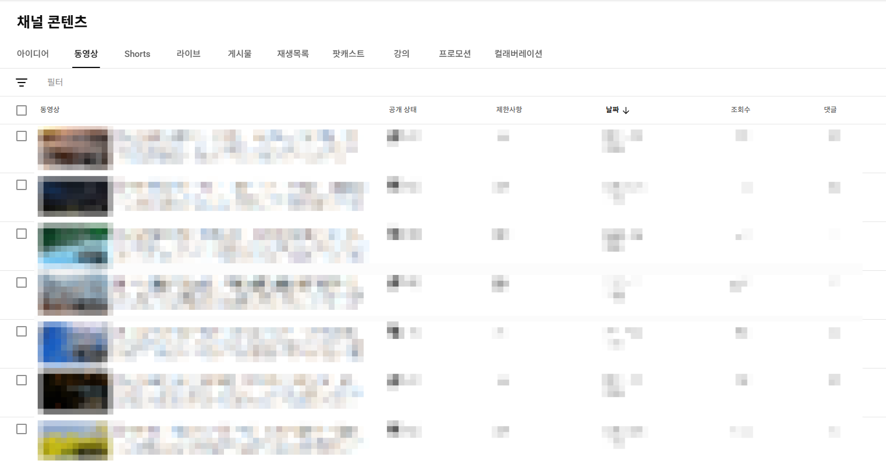
숏츠 → 롱폼 유입 구조 예시
숏츠에서 롱폼 영상으로 유입시키려면, 고정 댓글의 링크가 아니라 유튜브 스튜디오의 ‘관련 동영상’ 기능을 중심으로 설계해야 합니다. Shorts 댓글과 설명란의 URL은 클릭 링크로 작동하지 않을 수 있으므로, 실제 클릭 유도는 ‘관련 동영상’ 기능에 연결된 롱폼 영상을 통해 진행하는 것이 좋습니다.
- 제목/화면 문구 예시: 아침 출근길 기분 좋아지는 음악 — 관련 영상에서 1시간 풀버전 이어듣기
- 고정 댓글 예시: "관련 영상에서 1시간 풀버전을 이어서 들어보세요."
- 영상 내 텍스트: 관련 영상에서 1시간 풀버전 듣기
실전 예시
실전 예시:
기분 좋은 아침 음악 숏츠
- 콘셉트: 15초 하이라이트 숏츠
- 영상 소스: 커피에 우유가 부드럽게 섞이는 Pexels 영상
- 음악: 4장(기획편)에서 직접 생성한 AI 팝 음악의 가장 신나는 15초 부분
- 화면 텍스트: "출근길 지옥철에서 이어폰 꽂고 눈을 감아보세요. 스트레스가 사라집니다."
- 연결 장치: 유튜브 스튜디오의 ‘관련 동영상’ 기능에
[월요병이 싹 사라지는 기분 좋은 아침 음악 1시간] 롱폼 영상을 연결합니다.
고정 댓글에는 “관련 영상에서 1시간 풀버전을 이어서 들어보세요”처럼 안내 문구를 남깁니다.
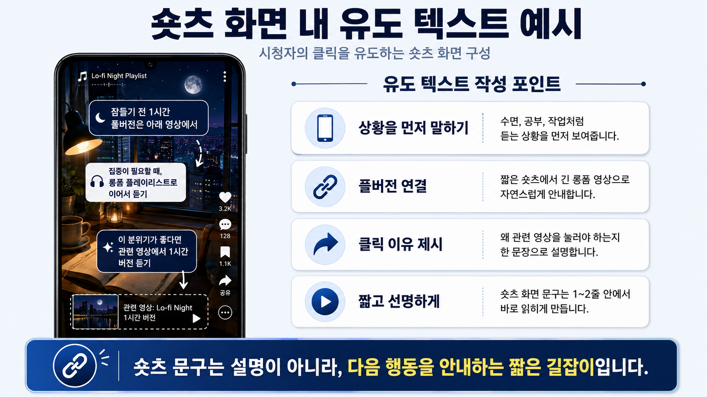
꼭 기억할 점
꼭 기억할 점
- 숏츠는 그 자체로 돈을 버는 목적보다는, 내 채널을 알리고 롱폼 영상으로 시청자를 데려오는 '전단지'이자 '엔진'입니다.
- 외부 음원 수익 플랫폼은 소소한 동기부여용으로 활용하되, 채널의 정체성(콘셉트)을 해치지 않는 선에서 현명하게 사용해야 합니다.
- 숏츠 영상 안팎(화면 텍스트, 관련 동영상, 고정 댓글)에 롱폼 영상으로 향하는 연결 고리를 반드시 만들어야 합니다.
바로 해볼 것
바로 해볼 것
- 내가 업로드한 (또는 업로드할) 1시간 플레이리스트 중 가장 하이라이트 부분 15~30초를 잘라서 숏츠용 세로 영상(9:16)으로 하나 만들어보기
- 숏츠 업로드 시 '관련 동영상' 탭에 내 롱폼 영상 연결하는 버튼 찾아보기
체크리스트
체크리스트
- 숏츠를 올리는 진짜 목적(채널 홍보 및 롱폼 유입)을 명확히 이해했는가?
- 숏츠 영상에 롱폼 영상으로 연결되는 '연결 장치(관련 동영상, 댓글 등)'를 세팅했는가?
- 외부 음원 플랫폼을 사용할 때도 내 채널 콘셉트에 맞는 곡만 골라 쓰기로 원칙을 세웠는가?
8장
8장. 30일 실행 플랜
핵심 요약
유튜브 음악 채널 운영에서 가장 위험한 적은 '조급함'과 '완벽주의'로 인한 번아웃입니다. 처음부터 매일 1개씩 영상을 올리겠다는 무리한 계획은 일주일을 넘기기 힘듭니다. 이번 장에서는 초보자가 지치지 않고 채널의 기반을 다질 수 있는 현실적이고 지속 가능한 '30일 루틴'을 제안합니다.
꼭 기억할 점
꼭 기억할 점
(이 단계가 중요한 이유)
"수익화는 도대체 언제 되나요?"
채널 개설 후 1~2주 차에 가장 많이 묻는 질문입니다. 2026년 유튜브 생태계에서 며칠 만에 수백만 조회수가 터지는 공식은 없습니다. 수익화라는 장기적인 목표를 달성하려면, 결과를 통제하려고 하기보다는 '매일 내가 해야 할 과정(루틴)'에 집중해야 합니다. 아래의 30일 플랜은 여러분이 흔들리지 않고 첫 번째 마일스톤(첫 롱폼 2개, 숏츠 4개 업로드)에 도달할 수 있도록 설계된 현실적인 길잡이입니다.
주의할 점
초보자가 가장 많이 하는 실수
- 1일 1영상 강박: 퇴근 후 피곤한 상태에서 퀄리티 낮은 영상을 매일 찍어내다 일주일 만에 포기하기.
- 조회수 집착: 영상 하나 올리고 10분마다 스튜디오 앱을 들어가 조회수 확인하며 스트레스받기.
- 루틴 없는 작업: 주말 하루에 몰아서 20시간씩 무리하게 작업하다가 병나기.
따라하기 쉬운 실행 순서:
초보자용 30일 실행 플랜
(주 2~3회 하루 1시간 투자 기준)
[1주차] 목표: 채널의 뼈대 기획과 세팅 완료
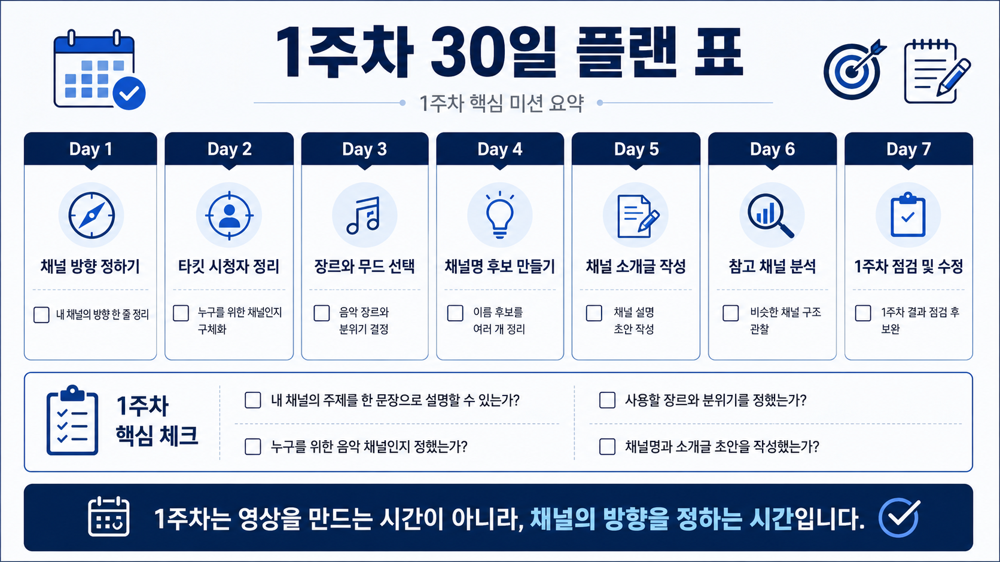
무작정 음악을 만들지 말고, 내 채널이 누구에게 어떤 감정을 줄지 고민하는 시기입니다.
| 일차 | 오늘의 미션 | 상세 내용 |
|---|---|---|
| 1일차 | 롤모델 찾기 | 평소 좋아하는 유튜브 음악 채널 3곳 구독하고 링크 메모하기 |
| 2일차 | 콘셉트 기획 | 부록의 '채널 콘셉트 기획표' 빈칸 채워보기 (타깃, 무드 정하기) |
| 3일차 | 구글 계정 세팅 | 유튜브 새 채널 개설 및 2단계 보안 인증 설정하기 |
| 4일차 | 이름 & 소개글 | 검색에 유리한 채널명 정하고 소개글 3줄 작성하기 |
| 5일차 | 디자인 세팅 | 미리캔버스/망고보드 무료 템플릿으로 프로필, 채널 배너 간단히 만들기 |
| 6일차 | 채널 키워드 입력 | 유튜브 스튜디오 설정에 들어가 채널 기본 키워드 7~10개 입력하기 |
| 7일차 | 1주차 점검 및 휴식 | 기획이 흔들리지 않는지 다시 한번 기획표 읽어보고 푹 쉬기 |
[2주차] 목표: AI 음원 제작과 무료 영상 소스 수집
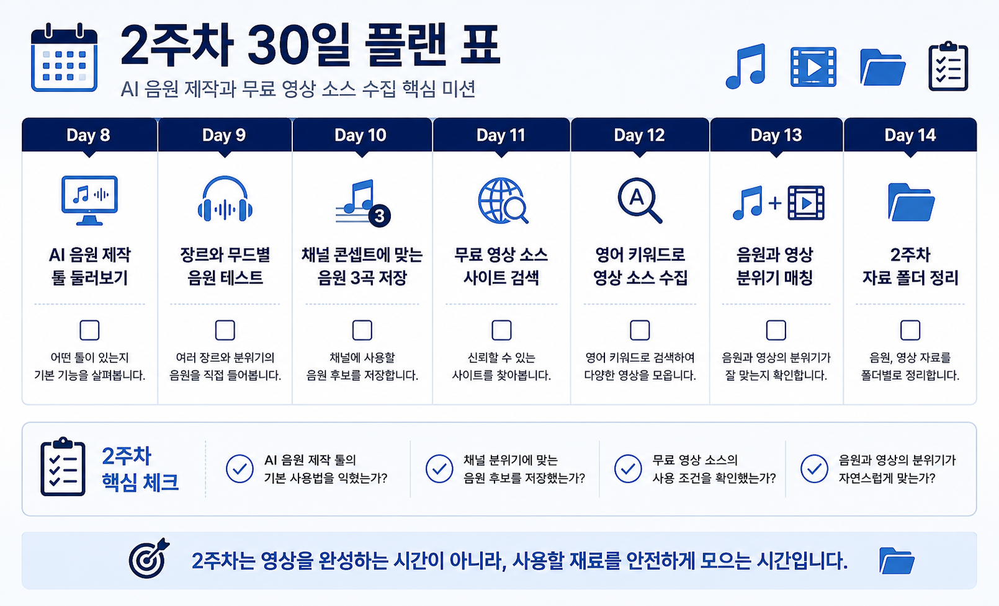
도구와 친해지는 주간입니다. 돈이 들지 않는 선에서 툴의 기능을 충분히 테스트하세요.
| 일차 | 오늘의 미션 | 상세 내용 |
|---|---|---|
| 8일차 | AI 툴 가입 및 구경 | Soundraw 등 AI 음원 사이트 가입 후 장르/무드 클릭하며 무료로 들어보기 |
| 9일차 | 상업적 이용권 확인 | 내가 선택한 AI 툴의 라이선스 규정(유료 결제 조건 등) 확인 및 플랜 구독 |
| 10일차 | 음원 10곡 생성 | 내 채널 콘셉트에 맞는 AI 음원 10곡 생성하여 폴더에 다운로드하기 |
| 11일차 | Pexels 가입 및 검색 | Pexels에 영어로 검색어 입력하고 내 음악에 어울리는 영상 찾기 |
| 12일차 | 영상 소스 5개 다운 | 분위기에 맞는 무료 비디오 클립 5개 다운로드하기 |
| 13일차 | 영상 편집기 설치 | Filmora, CapCut 등 직관적인 편집 프로그램 PC에 설치하고 켜보기 |
| 14일차 | 2주차 점검 및 휴식 | 내 컴퓨터에 음악 파일 10개, 영상 파일 5개가 잘 저장되어 있는지 확인 |
[3주차] 목표: 첫 롱폼(1시간) 영상 제작과 업로드
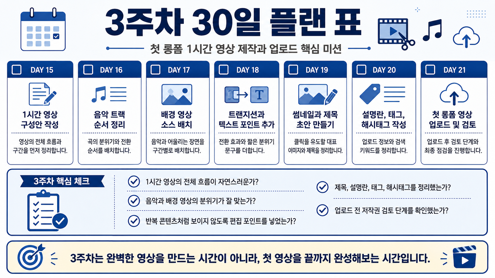
가장 시간이 오래 걸리는 주간입니다. 완벽주의를 버리고 일단 완성하는 데 의의를 두세요.
| 일차 | 오늘의 미션 | 상세 내용 |
|---|---|---|
| 15일차 | 파일 불러오기 | 편집 프로그램에 음악 10곡과 영상 5개 불러와서 타임라인에 올려보기 |
| 16일차 | 1시간 조립하기 | 음악을 이어 붙이고, 영상에 트랜지션(화면 전환)과 텍스트 필터 입히기 |
| 17일차 | 렌더링(출력) | 완성된 1시간짜리 영상을 Full HD(1080p) 이상으로 PC에 저장하기 |
| 18일차 | 썸네일/제목/설명란 | 부록 템플릿을 참고하여 클릭을 부르는 썸네일과 제목, 설명란 작성하기 |
| 19일차 | 첫 영상 업로드 | 유튜브 스튜디오에 영상 올리기 (저작권 검토 탭에서 초록색 체크마크 확인!) |
| 20일차 | 두 번째 영상 기획 | 첫 영상과 비슷한 콘셉트로 두 번째 1시간 영상 구성 계획하기 |
| 21일차 | 3주차 점검 및 휴식 | 내 채널에 첫 영상이 무사히 올라간 것을 자축하기 |
[4주차] 목표: 숏츠(Shorts) 확장과 데이터 분석 기초
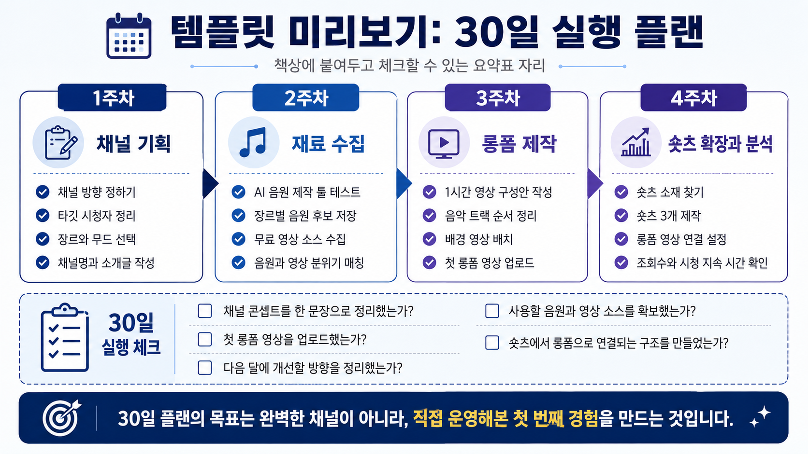
본격적으로 엔진을 달아 채널을 홍보하고, 다음 한 달을 준비하는 주간입니다.
| 일차 | 오늘의 미션 | 상세 내용 |
|---|---|---|
| 22일차 | 두 번째 롱폼 업로드 | 20일차에 기획한 두 번째 영상을 빠르게 편집하여 업로드하기 |
| 23일차 | 첫 숏츠(15초) 제작 | 첫 롱폼 영상의 하이라이트 구간 15초를 세로 비율로 잘라 편집하기 |
| 24일차 | 첫 숏츠 업로드 | 숏츠 올리고 '관련 동영상'에 내 첫 롱폼 영상 링크 연결하기 |
| 25일차 | 두 번째 숏츠 제작 | 두 번째 롱폼 영상의 하이라이트를 30초 길이의 숏츠로 만들기 |
| 26일차 | 두 번째 숏츠 업로드 | 숏츠 올리고 '관련 동영상'에 롱폼 영상을 연결한 뒤, 고정 댓글에는 풀버전 안내 문구 남기기 |
| 27일차 | 데이터 가볍게 읽기 | 유튜브 스튜디오 [분석] 탭에서 내 롱폼 영상의 '평균 시청 지속 시간' 확인하기 |
| 28일차 | 다음 달 루틴 짜기 | 다음 한 달 동안 "일주일에 롱폼 1개, 숏츠 2개" 올릴 요일 정하기 |
| 29~30일차 | 휴식 및 재충전 | 유튜브 스튜디오 앱을 삭제(또는 알림 끄기)하고 주말 동안 푹 쉬기 |
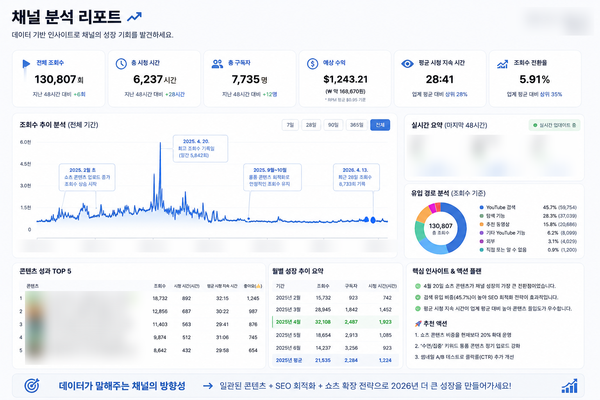
데이터 점검 화면에서 볼 지표
체크리스트
30일 후 점검표
(마일스톤 체크)
한 달의 플랜이 끝난 후, 스스로를 칭찬하며 아래 항목을 체크해 보세요.
- 내 채널만의 명확한 콘셉트와 이름, 디자인이 세팅되었는가?
- 라이선스를 확인해 생성한 1시간짜리 롱폼 영상이 2개 이상 업로드되었는가?
- 롱폼 영상으로 트래픽을 연결하는 숏츠가 2개 이상 업로드되었고, 링크 연결이 잘 되어 있는가?
- 다음 한 달 동안 내가 소화할 수 있는 무리하지 않는 업로드 루틴(예: 주 1회)을 확정했는가?
꼭 기억할 점
꼭 기억할 점
- 채널 운영 초기의 성패는 조회수가 아니라 '포기하지 않는 지속 가능한 루틴'을 확립하는 데 있습니다.
- 1주 차 기획, 2주 차 소스 수집, 3주 차 롱폼 제작, 4주 차 숏츠 확장이라는 단계별 접근이 필요합니다.
- 매일 1시간씩만 투자하여 무리하지 않고 '완성' 자체에 의의를 두는 것이 완벽주의보다 훨씬 중요합니다.
바로 해볼 것
바로 해볼 것
- 9장 부록에 있는 '30일 실행 플랜 요약표'를 프린트하거나 바탕화면에 저장하기
- 오늘이 바로 '1일 차'임을 인지하고, 당장 롤모델 채널 3곳 찾아보기
체크리스트
체크리스트
- 조급함을 버리고 최소 3개월은 꾸준히 해보겠다는 마음가짐을 가졌는가?
- 하루에 투자할 수 있는 자투리 시간(출퇴근 시간 30분, 자기 전 1시간 등)을 확보했는가?
- 결과(조회수)가 당장 안 나오더라도 실망하지 않고 과정(루틴)을 즐길 준비가 되었는가?
9장
9장. 부록 템플릿 모음
본문에 소개된 내용을 바탕으로 여러분이 직접 빈칸을 채우거나 복사해서 사용할 수 있는 실전 템플릿 10종입니다. 메모장이나 워드에 복사해두고 채널 운영 시 활용해 보세요.
템플릿
1. 채널 콘셉트 기획표
(채널을 처음 만들거나 정체성이 흔들릴 때 다시 꺼내 보세요.)
- 채널명 (가제): [여기에 입력, 예: 새벽 두 시의 로파이]
- 채널의 핵심 목적: [여기에 입력, 예: 코딩이나 과제할 때 집중력을 높여주는 BGM 제공]
- 메인 장르/분위기: [여기에 입력, 예: Lofi Hip Hop / 차분함, 빈티지]
- 업로드 주기 목표: [여기에 입력, 예: 주 1회 롱폼, 주 2회 숏츠]
- 나의 롤모델 채널: [여기에 입력, 1~2개 채널 이름]
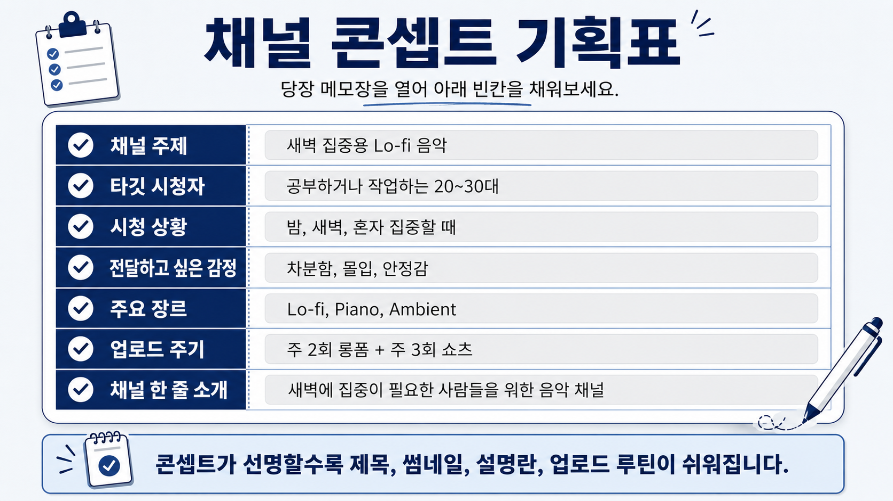
템플릿
2. 타깃 시청자 분석표
(내 영상을 볼 사람을 구체적으로 상상해 보세요.)
- 연령대 및 직업: [여기에 입력, 예: 20~30대 대학생 및 직장인]
- 시청 시간대: [여기에 입력, 예: 밤 10시 ~ 새벽 3시]
- 시청 상황: [여기에 입력, 예: 방에 불을 끄고 스탠드만 켠 채 무언가에 집중할 때]
- 시청자가 얻고 싶은 감정: [여기에 입력, 예: 외롭지 않은 느낌, 적당한 긴장감과 편안함]
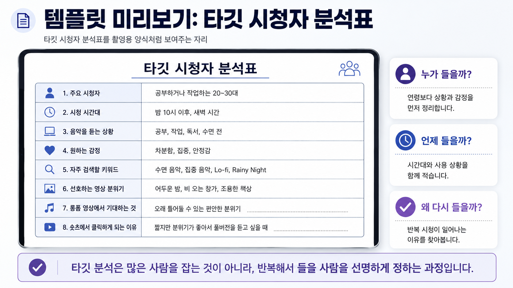
템플릿
3. 음악 주제 선정표
(아이데이션)
(무슨 음악을 올릴지 막막할 때 아래 주제들을 참고하여 기획해 보세요.)
- 시간대별: 모닝콜, 점심 식후, 퇴근길, 새벽 감성, 딥슬립
- 상황별: 독서할 때, 카페에서, 드라이브, 홈트레이닝, 코딩/과제
- 계절/날씨별: 봄꽃 구경, 한여름 밤, 비 오는 날 창가, 눈 내리는 겨울, 흐린 날
- 감정별: 위로가 필요할 때, 신나고 싶을 때, 우울할 때, 설렐 때
템플릿
4. AI 음원 제작 프롬프트
(세팅) 예시 모음
(Soundraw 또는 Suno 등에서 활용할 수 있는 장르/무드/템포 세팅 값입니다.)
| 테마 | 장르 (Genre) | 무드 (Mood) | 템포 (Tempo) | 악기 포인트 |
|---|---|---|---|---|
| 기분 좋은 아침 | Pop, Acoustic | Happy, Hopeful | Normal | 어쿠스틱 기타, 피아노, 경쾌한 킥 드럼 |
| 밤 휴식 | Ambient | Peaceful, Dark | Slow | 드럼 제거, 신디사이저 패드, 몽환적인 피아노 |
| 공부 집중 (Lo-fi) | Lofi Hip Hop | Laid Back, Chill | Normal | 빈티지 노이즈, 베이스 라인, 부드러운 EP 피아노 |
| 퇴근길 힐링 | R&B, Soul | Smooth, Relaxing | Normal | 일렉트릭 기타, 부드러운 드럼 비트 |
| 에너지 충전 운동 | EDM, Rock | Intense, Epic | Fast | 강한 베이스 킥, 신디사이저 리드, 화려한 드럼 |
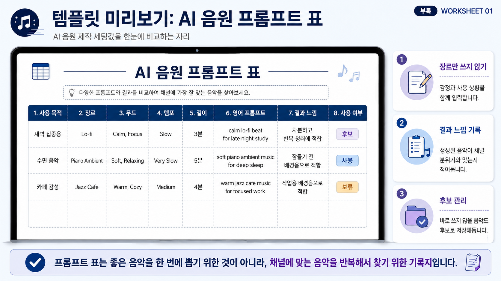
템플릿
5. 클릭을 부르는
유튜브 제목 예시 100선
(키워드와 감성 문구를 조합한 제목입니다. 내 채널에 맞게 변형하여 사용하세요.)
[아침/활력 음악]
- 월요병이 싹 사라지는 기분 좋은 아침 음악
- 출근길 지옥철을 드라이브로 만들어주는 상쾌한 팝송
- 눈뜨자마자 듣는 긍정 에너지 가득한 모닝 플레이리스트
- 기분 좋은 하루를 여는 산뜻한 카페 배경음악
- 알람 소리 대신 이 음악으로 하루를 시작해 보세요
- 주말 아침, 브런치와 함께 듣기 좋은 감성 음악
- 활기찬 하루를 위한 추천 플레이리스트
- 기분 전환이 필요할 때 듣는 청량한 노래 모음
- 상쾌한 아침 공기 같은 기분 좋은 노래
- 지친 아침을 차분히 깨워주는 산뜻한 멜로디
[수면/휴식 음악]
- 잠들기 전 마음을 차분하게 해주는 수면 음악
- 생각을 정리하고 쉬어가기 좋은 수면 음악
- 비 오는 밤, 타닥타닥 빗소리와 편안한 피아노
- 복잡한 생각을 내려놓고 쉬고 싶을 때 듣는 음악
- 깊은 밤 차분한 분위기를 만드는 수면 음악
- 하루를 마무리하며 쉬어가기 좋은 힐링 음악
- 잠들기 전 긴장을 풀고 편안한 밤을 준비하는 음악
- 우주를 유영하듯 편안한 심해 수면 음악
- 마음을 차분하게 해주는 따뜻한 휴식 BGM
- 자장가 대신 듣는 어른들을 위한 수면 음악
[공부/집중 음악]
- 벼락치기 전 집중 리듬을 잡아주는 백색소음
- 2시간이 편안하게 흘러가는 과제할 때 듣기 좋은 가사 없는 브금
- 도서관 백색소음 + 잔잔한 피아노 연속 듣기
- 업무 집중 분위기를 차분하게 잡아주는 브금
- 집중이 안 될 때 딱 1시간만 들어보세요
- 코딩할 때 집중 분위기를 만드는 비트
- 뽀모도로 기법, 50분 집중 10분 휴식 플레이리스트
- 나만의 작은 작업실, 몰입을 돕는 배경음악
- 공부 흐름을 차분하게 잡아주는 멜로디
- 지루한 공부 시간을 가볍게 만들어줄 차분한 브금
[로파이(Lo-fi) 음악]
- 새벽 두 시, 방구석을 힙한 카페로 만들어주는 Lo-fi
- 비 오는 날 창밖을 보며 멍때리기 좋은 로파이 비트
- 감성 충만, 코딩과 독서를 위한 Lo-fi Hip Hop
- 복잡한 생각 비우기 좋은 빈티지 감성 비트
- 따뜻한 코코아 한 잔과 어울리는 겨울밤 로파이
- 센치한 밤, 나 혼자 듣기 좋은 Lo-fi Playlist
- 홈카페 오픈! 감각적인 인테리어를 완성하는 음악
- 과제할 때 들으면 분위기 나는 빈티지 비트
- 레트로 감성 낭낭한 테이프 노이즈 로파이
- 노을 질 때 들으면 잘 어울리는 칠(Chill)한 음악
[힐링/명상 음악]
- 불안하고 지친 마음을 위로해주는 따뜻한 힐링 음악
- 복잡한 마음을 차분하게 정리하는 명상 브금
- 숲속 분위기로 마음을 차분하게 하는 힐링 음악
- 생각 비우기, 명상과 요가를 위한 깊은 휴식 음악
- 우울하고 지친 날, 말없이 위로가 되어주는 멜로디
- 긴장된 하루를 부드럽게 마무리하는 휴식 음악
- 번아웃이 왔을 때 조용히 눈을 감고 들어보세요
- 마음 챙김, 나를 사랑하게 되는 긍정 확언 음악
- 숲속을 걷는 듯한 상쾌한 자연의 소리와 피아노
- 위로가 필요한 당신에게 바치는 따뜻한 연주곡
[카페/매장 음악]
- 한남동 감성 카페에 흐르는 트렌디한 BGM
- 매장 분위기를 세련되게 만드는 감각적인 팝송 모음
- 백화점 라운지 느낌, 고급스러운 재즈 플레이리스트
- 대화하기 좋은 적당한 텐션의 브런치 카페 음악
- 손님들이 제목 물어보고 가는 힙한 팝송
- 우리 집 거실을 북카페로 만들어주는 잔잔한 음악
- 빈티지 샵에 어울리는 그루브 넘치는 R&B
- 공부하기 좋은 스터디 카페 백색소음 브금
- 와인바 감성, 늦은 밤에 어울리는 무드 있는 재즈
- 햇살 드는 예쁜 개인 카페에서 나올 법한 노래
[계절/날씨 음악]
- 비 내리는 창가에서 듣기 좋은 감성 플레이리스트
- 벚꽃 흩날리는 봄날, 설레는 드라이브 음악
- 무더위를 날려줄 청량하고 시원한 여름밤 팝송
- 찬 바람 불 때 생각나는 따뜻한 가을 감성 노래
- 눈 내리는 겨울밤, 벽난로 앞에서 듣는 따스한 음악
- 흐린 날씨의 우울함을 달래주는 포근한 멜로디
- 빗소리 ASMR과 함께 듣는 차분한 재즈 피아노
- 쨍한 여름 바다가 생각나는 트로피컬 하우스
- 낙엽 밟으며 걷고 싶은 가을 산책길 BGM
- 크리스마스를 기다리며 듣는 설렘 가득한 캐롤 연주곡
[드라이브/여행 음악]
- 밤 드라이브할 때 들으면 분위기 좋은 팝송
- 여행 떠나는 차 안에서 듣기 좋은 신나는 음악
- 해안도로 달릴 때 창문 열고 듣는 청량한 음악
- 막히는 퇴근길 스트레스를 덜어줄 그루브 팝
- 야간 비행기 안에서 듣는 몽환적인 플레이리스트
- 혼자 훌쩍 떠나는 기차 여행 추천 브금
- 혼드(혼자 드라이브)할 때 듣기 좋은 감성 촉촉 노래
- 속도감 있는 고속도로 드라이브용 EDM
- 캠핑장 모닥불 앞에서 듣는 잔잔한 어쿠스틱
- 노을 지는 해변에서 맥주 한 캔과 어울리는 노래
[감성/이별 음악]
- 혼자 펑펑 울고 싶은 날 듣는 슬픈 피아노 연주곡
- 짝사랑에 가슴 아플 때 공감되는 감성 플레이리스트
- 지나간 추억이 떠오르는 아련하고 몽글몽글한 음악
- 비 오는 날 혼자 듣기 좋은 센치한 이별 브금
- 위로받고 싶은 새벽 2시에 듣는 잔잔한 노래
- 마음이 허전할 때 따뜻하게 채워주는 감성 팝
- 그리운 사람이 생각나는 밤에 듣는 멜로디
- 눈물 버튼 주의, 듣자마자 가슴 뭉클해지는 연주곡
- 이별 후 마음을 다독이는 차분한 음악
- 새벽 감성 폭발, 다이어리 적으며 듣는 노래
[운동/루틴 음악]
- 운동 루틴에 활력을 더하는 텐션 높은 EDM
- 아침 러닝에 활기를 더하는 팝송
- 홈트레이닝 분위기를 살려주는 신나는 비트
- 요가와 필라테스를 위한 고요하고 차분한 명상 브금
- 라이딩할 때 듣기 좋은 경쾌한 음악
- 운동 집중 분위기를 살려주는 강렬한 브금
- 아침 스트레칭, 몸을 가볍게 깨워주는 부드러운 음악
- 동기부여가 필요한 순간 듣기 좋은 웅장한 음악
- 가볍게 움직이고 싶을 때 듣기 좋은 댄스팝
- 운동 끝내고 쿨다운 할 때 듣는 편안한 스트레칭 브금
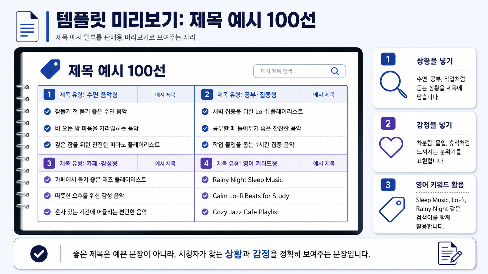
템플릿
6. 설명란 복붙 템플릿
([] 안의 내용을 영상에 맞게 수정하여 사용하세요.)
[첫 문단: 영상 소개]
오늘도 [채널명]을 찾아주셔서 감사합니다.
이번 플레이리스트는 [타깃 시청자, 예: 잠들기 전 마음이 분주한 분들]을 위해
[어떤 감정, 예: 깊은 수면과 편안한 휴식]을 드릴 수 있는 곡들로 정성껏 선곡했습니다.
복잡한 생각은 잠시 내려놓고, 편안한 시간 보내시길 바랍니다.
[타임스탬프 (시청 지속 시간 보조)]
⏳ Tracklist
00:00 [곡 제목 1]
03:15 [곡 제목 2]
06:30 [곡 제목 3]
[댓글 요청 및 구독 안내]
오늘 영상 중 어떤 음악이 가장 마음에 드셨나요? 여러분의 하루를 댓글로 공유해 주세요!
영상이 도움이 되셨다면 '구독'과 '좋아요' 부탁드립니다. 다음에도 좋은 음악으로 찾아오겠습니다.
템플릿
7. 썸네일 문구 템플릿
(썸네일에는 긴 문장보다 짧고 시선을 끄는 문구가 좋습니다.)
- "들으면 하루가 상쾌해지는 음악"
- "잠들기 전 편안한 휴식 루틴"
- "도서관 갈 필요 없는 백색소음"
- "출근길 지옥철이 천국으로"
- "과제할 때 집중 분위기를 만드는 BGM"
- "이어폰 꽂는 순간 나만의 카페"
템플릿
8. 업로드 전 최종 체크리스트
(5분 점검)
- 제목에 핵심 키워드와 감성 묘사가 포함되었는가?
- 설명란에 타임스탬프와 구독/댓글 요청 문구를 넣었는가?
- 본문 해시태그는 딱 3개 이하로 입력했는가?
- 유튜브 스튜디오 태그(Tag) 입력란에 관련 키워드를 7개 이상 넣었는가?
- 썸네일 글씨가 모바일 화면에서도 잘 보일 만큼 큰가?
- [중요] 유튜브 '저작권 검토' 탭에서 초록색 체크마크(발견된 문제 없음)를 확인했는가?
템플릿
9. 수익화 심사(YPP 신청) 전
점검표
(구독자 1천 명, 시청 시간 4천 시간 달성 후 신청 버튼 누르기 전 체크!)
- 내 채널의 영상들이 너무 똑같은 정지 화면(사진 1장)으로만 이루어지지 않았는가? (반복 콘텐츠 방지)
- 다른 사람의 음악이나 뮤직비디오를 무단으로 짜깁기하지 않았는가? (재사용 콘텐츠 방지)
- 채널 소개글이나 정보란에 '채널의 운영 목적과 기획 의도'가 명확히 적혀 있는가? (채널의 정체성 어필)
- AI 음원이나 무료 영상을 사용했다면 상업적 라이선스와 사용 범위를 확인했는가?
템플릿
10. 30일 실행 플랜 요약표
(책상에 붙여두고 매주 진행 상황을 체크해 보세요.)
| 주차 | 핵심 목표 | 완료 여부 |
|---|---|---|
| 1주차 | 타깃 설정, 채널명 확정, 유튜브 채널 기본 세팅 완료 | |
| 2주차 | AI 툴 유료 결제(라이선스 확보), 음원 10곡 및 영상 소스 수집 | |
| 3주차 | 영상 편집 툴로 1시간짜리 롱폼 영상 첫 조립 및 업로드 완료 | |
| 4주차 | 롱폼 영상 2개 업로드 유지, 하이라이트 숏츠 영상 제작 및 연결 | |
| 목표 달성 | 총 롱폼 2개, 숏츠 4개 업로드 완료 다음 한 달 루틴 설정 완료 |
마무리 안내
마무리 안내:
지금 바로 30일 플랜을 시작하세요
여기까지 읽으시느라 정말 고생 많으셨습니다. 이제 여러분은 남의 음악을 훔쳐 쓰다 채널이 삭제되는 초보자들의 실수를 피하고, 나만의 리스크 낮은 수익 파이프라인을 설계할 핵심 지식을 갖추었습니다.
하지만 아무리 좋은 지식도 실행하지 않으면 종이 쪼가리에 불과합니다. 완성도 높은 채널 이름과 첫 영상을 만들려고 고민만 하다가 포기하지 마세요. 서툴러도 좋으니 일단 부록에 있는 '30일 실행 플랜'의 1일 차 미션부터 실천해 보시기 바랍니다.
여러분의 첫걸음을 응원합니다. 이 전자책이 채널을 안정적으로 설계하고 꾸준히 운영하는 데 실질적인 도움이 되기를 바랍니다. 파이팅!